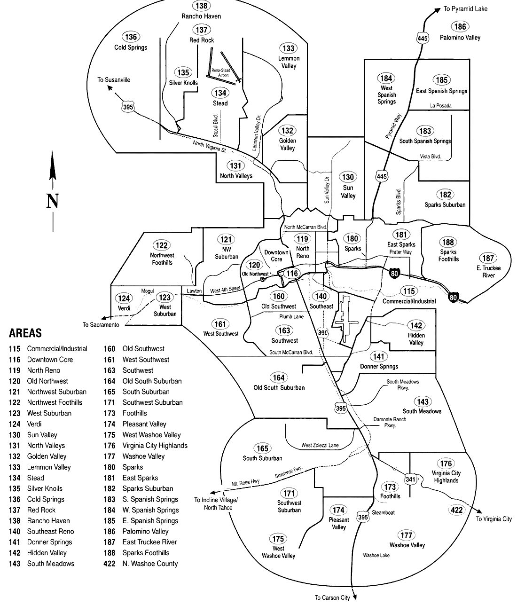

The 2026 Reno Edition
A complete guide to structure, licensing, hiring and tax — with the Reno Launch Planner, a 29-worksheet companion workbook
How to Start a Business in Reno, Nevada
How to Start a Business in Reno, Nevada
Structure · Licensing · Hiring · Tax
The 2026 Reno Edition
Including The Reno Launch Planner, a companion workbook of worksheets, trackers and checklists
Reno First
How to Start a Business in Reno, Nevada
The 2026 Reno Edition
Published by Reno First
ISBN: 978-0-000000-00-0
This publication is designed to provide accurate and authoritative information about starting a business. Although Publisher and Author have made a substantial effort to verify the accuracy and completeness of that information, the laws, procedures, and other sources and source materials on which that information is based can change frequently, and the interpretation of that information may differ between different people and may depend upon your specific situation. For those reasons, neither Publisher nor Author assume responsibility for the consequences of reliance on or other use of the information in this publication, and it is strongly recommended that you consult an attorney, accountant, or other expert, who can give you specific advice. Although the people and organizations referenced in this publication are believed to be reputable, neither Publisher nor Author endorses or assume responsibility for their activities, products or services. For that reason, it is also strongly recommended that you carefully research and investigate any such sources before transacting business with them to ensure reliability and that the products or services they provide are appropriate to your needs and budget. This publication is provided with the understanding that neither Publisher nor Author is engaged in rendering legal, accounting or other professional advice. If legal or other expert advice is required, the services of a competent attorney, accountant or other appropriate professional should be sought.
Part One
Five chapters and four appendices covering everything the State of Nevada, Washoe County and the City of Reno will ask of you — from choosing a legal structure to the day you hire your first employee.
Chapter 1
Sole proprietorships. General and limited partnerships. Corporations. Limited liability companies. Limited liability partnerships.
As a small business owner, one of the first major decisions you will make is to choose a legal form under which to operate your business. It is important, therefore, to understand the four basic legal forms: sole proprietorship, partnership, corporation, and limited liability company, then weigh the advantages and disadvantages of each.
Variations of these four entities are available to most business owners in most states. These variations, such as the S corporation and the limited liability partnership are discussed in greater detail in this chapter. Further, the major advantages and disadvantages of each entity are covered to help you better evaluate which one may be right for your situation. Consult your attorney or accountant, or both, to find out which form makes the most sense for your business’ financial condition.
To get started, first consider the criteria you must take into account when making your decision.
Five critical factors will influence which way you decide to go. You must consider:
Legal liability. Determine whether your business has potential liability and if you can afford that risk.
Tax implications. Look at your business goals and individual situation to find out how you can best minimize your tax burden.
Cost of formation and recordkeeping. If you choose a structure that offers more legal protection to you as an individual, you can bet on increased administrative time and costs to ensure that liability protection.
Flexibility. You want to choose a form that maximizes the flexibility of the ownership structure — achieving both short-term and long-term goals.
Future needs. Even during the start-up phase, you will need to look down the road to what will happen when you retire, die, or sell the business.
With these key factors fresh in your mind, you are ready to explore the pros and cons of each form. In addition, if you will hire employees to work in your business, your responsibilities will significantly increase in scope. You must become knowledgeable in matters such as minimum wage, labor laws, unemployment insurance, workers’ compensation, and fair employment practices. But do not despair, Chapter 3 is dedicated to helping you understand the additional requirements that come with being an employer. For current federal tax guidance, use the IRS Small Business and Self-Employed Tax Center and consult a qualified tax professional about the consequences of the structure you are considering.
A sole proprietorship is the simplest, most common form of business organization. It is defined as a business that a single individual owns. It is the easiest and least costly means of getting into business.
As the owner of a sole proprietorship, you are personally responsible for all business debts and liabilities. All your business profits will be considered as income to you and will be taxed at the personal income level. Refer to the discussion below on tax situations for Nevada sole proprietors. Conversely, all personal assets and properties are at risk if a sole proprietorship incurs debts beyond its ability to pay.
If you will operate your sole proprietorship under a name other than your own, you should register the business name (commonly known as “doing business as” or “d.b.a.”) with the Washoe County Clerk’s Office. The address and telephone number are provided in Appendix C. For more information, refer to the discussion on naming your business in Chapter 2.
If you are the owner of a sole proprietorship in Nevada, your business profits and losses will be subject to your personal federal income tax — Nevada has no state personal income tax, so there is no state return to file on this income. You will still be required to report these earnings or losses on your individual federal income tax return. For more information, refer to the discussion on individual income tax in Chapter 2. For more information on sole proprietorships in Nevada, contact the Nevada Secretary of State. This address is in Appendix C.
A general partnership is the association of two or more persons who have agreed to operate a business. You can form a general partnership by a simple verbal agreement of the partners. However, it is in your best interest and the best interest of all parties that you have an attorney prepare, or at least review, a formal, written partnership agreement that addresses such issues as:
In a general partnership, any partner may hire or fire employees, contract for services, commit to sales, or accomplish any activity required to operate the business independently from the other partners. The actions of a single partner are binding upon all partners.
A partnership generally does not pay federal income tax at the entity level; instead, taxable income, deductions, gains, and losses pass through to the partners. The partnership generally files federal Form 1065, U.S. Return of Partnership Income, and provides Schedule K-1 information to its partners. Other federal, Nevada, payroll, or Commerce Tax obligations may still apply depending on the business.
Because Nevada has no state personal income tax, there is no state partnership return or state equivalent to California’s FTB Form 565 to file — each partner simply reports their share of partnership profit or loss on their federal Form 1040. If you have nonresident partners, ordinary federal partnership reporting rules apply.
If your partnership owns real property in Nevada, contact the Washoe County Recorder’s Office (or the recorder’s office in whatever county the property is located) to determine what, if any, filing is required for that property. Current county recorder contact information and recording requirements are available through the county’s official website.
If a partnership sounds appealing but you want to distinguish between active management and limited-partner liability, you may want to consider a limited partnership. A Nevada limited partnership has at least one general partner and at least one limited partner. Limited partners generally are not liable for partnership obligations solely because of their status as limited partners. Nevada law also permits limited partners to exercise specified voting, advisory, approval, and other rights without automatically becoming liable as general partners. Liability can become more complicated if a limited partner participates in control in a way that causes a third party reasonably to believe the limited partner is a general partner, so the partnership agreement and actual conduct matter.
If you are an operating or general partner in a business, you are responsible for the liability and operation of the business. You assume responsibility for all management decisions and debts. As in a general partnership, as an operating partner your personal assets are not protected from the creditors of the business.
As a limited partnership in Nevada, you are required to file a Certificate of Limited Partnership with the Nevada Secretary of State, along with an Initial List of General Partners and the state business license fee — combined, these total several hundred dollars depending on current fees (see Appendix C for current SilverFlume filing amounts). While this certificate requires disclosure of the general partners, it does not require the listing of the limited partners or the amounts invested in the capital of the limited partnership. It should be noted that until a limited partnership files its certificate, it is not recognized as a legal entity by the state and thus cannot take legal action in any Nevada state court. A written limited partnership agreement is strongly recommended to define management, economics, transfers, and other rights and obligations, even when state law does not require the agreement itself to be filed with the Secretary of State.
Limited partnerships that are formed under the laws of a state other than Nevada but do business in Nevada are known as “foreign” limited partnerships. If you operate as a foreign limited partnership, you must register with the Nevada Secretary of State and pay the applicable registration fee.
Nevada limited partnerships must file an Annual List of General Partners with the Nevada Secretary of State each year, along with the state business license renewal. Unlike California, Nevada does not impose a separate annual minimum tax on limited partnerships. Information on limited partnerships may be obtained from the Nevada Secretary of State. The address and telephone number are located in Appendix C.
A corporation is the most complex type of business organization. It is formed by law as a separate legal entity, fully distinct from its owners — also called stockholders or shareholders. As such, it exists independently from its owners and endures as a legal entity even at the death, retirement, or resignation of a stockholder. Thus, the corporation, not the individuals, handles the responsibilities of the organization. The corporation is taxed and can be held legally liable for its actions. Any person or group of people operating a business of any size may incorporate. Similarly, any group engaged in religious, civil, nonprofit, or charitable endeavors may incorporate and enjoy the legal and financial benefits of incorporation.
You may find that incorporating offers your business several benefits. For example, your corporation may be able to raise capital through the sale of stock more easily. Also, as an owner of stock, you do not have to be publicly listed, affording you and other stockholders a degree of anonymity. Further, the cost of fringe benefits such as life and health insurance, travel expenses, and retirement plans are tax-deductible.
The tax treatment of health insurance and other fringe benefits depends on the business structure and the owner’s status. Self-employed individuals may qualify for a federal self-employed health insurance deduction, while C corporations and S corporation shareholder-employees are subject to different rules. Because these rules change and can be highly fact-specific, confirm the current IRS treatment with a qualified tax professional.
Corporations can take on several different forms depending on the individual business situation. If you decide to incorporate your business, you need to know the advantages and disadvantages of each.
A general business corporation is the most formalized type of business structure and is usually formed for profit-making organizations. A general corporation is the most common type of corporation. In a general corporation, its owners are stockholders, and ownership is based on shares of stock. There is no limitation to the number of stockholders.
Since the corporation operates as a separate entity, each stockholder’s personal assets are protected from attachment by creditors of the corporation. Thus, as a stockholder, your liability is limited to the capital that you have invested in the purchase of stock.
The basics of registering and operating your general corporation are presented later in this chapter under “Handling Corporate Formalities.”
The S corporation is a form of the general corporation that has a special tax status with the IRS and many states. The most attractive benefit of an S corporation is the avoidance of double taxation. You have learned that if a dividend is declared, then shareholders must declare that dividend as income and it is taxed again — hence, the double taxation stigma. S corporations avoid this dual taxation because all losses and profits are “passed through” the corporation to the shareholders and are declared only once to the IRS as part of each shareholder’s income.
As in other forms of incorporation, each shareholder’s personal assets are protected from the business’ debts. There is, however, a downside to the S corporation when it comes to tax time for the corporation’s shareholders. If the corporation makes a profit, each shareholder is required to pay taxes on his or her proportionate share of that profit — regardless of whether the corporation distributes the profit to its shareholders or not. Even if the profit is not distributed to the shareholders, the IRS still considers it part of the individual shareholder’s income and taxes it at the appropriate rate. If there is a disagreement with the IRS about who should pay the tax, the IRS can obtain payment from the assets of individual shareholders thereby going around the protection from confiscation by the IRS if the tax is not paid. This can result in a big surprise for a shareholder who helps fund the business but doesn’t get payments for the profits because the corporation is either not liquid enough to pay the share of profit to a shareholder or because the managers want to use the profits to build the business and keep the profit in the corporation. Even if the S corporation distributes its profits to shareholders, the additional income for a shareholder may result in a higher tax rate for the shareholder — depending on the amount of other income the shareholder has.
On the other hand, if the S corporation loses money, there may be a significant tax benefit to its shareholders. The loss is passed on to each shareholder, proportionate to his or her stock ownership. This loss can then be applied to the shareholder’s overall income and potentially lower his or her tax liability. As in other forms of incorporation, each shareholder’s personal assets are protected from the business’ debts. Because of this duality of benefit versus liability when it comes to S corporations, you should check with your accoun-tant or attorney to determine which corporation is the best form for you.
If the corporation makes a profit, each shareholder is required to pay taxes on his or her proportionate share of the profit. If the profit from the corporation is not distributed to the shareholders, tax on the profit must be paid from the individuals’ personal income. If the corporation distributes profits to shareholders, the individual tax rate can be higher or lower than what would be paid as a C corporation with the same profit depending upon the amount of other income the shareholder has. Shareholders of an S corporation can also derive tax benefits if the corporation loses money because the loss is passed on to each shareholder proportionate to his or her stock ownership.
As in other forms of incorporation, each shareholder’s personal assets are protected from the business’ debts.
If you want to form as an S corporation, your general corporation must meet specific requirements before applying for or being granted S corporation status by the IRS. To qualify for federal S corporation status, your business must:
If your corporation meets the above criteria, you may then apply for S corporation status if all shareholders consent to the election of S corporation status and your business files IRS Form 2553, Election by a Small Business Corporation. Obtain the current form and instructions directly from IRS.gov.
S corporation status is subject to ongoing IRS eligibility rules. If an S election terminates or is revoked, a corporation generally cannot make a new S election before the fifth tax year after the first year for which the termination or revocation is effective unless the IRS consents to an earlier election. Your S corporation status can be terminated if your corporation:
Because Nevada has no state corporate income tax, S corporation status is purely a federal tax matter in Nevada — there is no state-level S corp election form to file. To qualify federally, you must complete IRS Form 2553, Election by a Small Business Corporation, by the 15th day of the third month of that tax year. Your corporation will still need to file its Annual List of Officers/Directors and renew its state business license with the Nevada Secretary of State each year, but this is unrelated to your S corp election.
Take a bigger-picture perspective when considering S corporation status. S corporations can avoid the entity-level double taxation that generally applies to C corporations, but shareholder-employees are subject to special compensation and fringe-benefit rules. Review the current S corporation guidance and Form 2553 instructions at IRS.gov, and consult a qualified tax professional before making the election.
When your corporation does business outside the state in which it was incorporated, it is considered a foreign corporation. For instance, suppose you originally incorporate in the state of Maryland but later find you want to do business in New Jersey. Your company, a domestic corporation in Maryland, will become a foreign corporation in New Jersey. If your business will operate as a foreign corporation, it will be subject to potential liabilities, penalties, and problems unless it is qualified to operate in that state. If your business fails to qualify, you may be subject to corporate fines, criminal charges, or a lack of legal recognition in a court of law.
To qualify as a foreign corporation in Nevada, you must register with the Nevada Secretary of State by filing an Application for Registration of Foreign Corporation. Filing fees are comparable to those for a domestic Nevada corporation and vary based on your authorized shares (see Appendix C for current SilverFlume filing amounts). You will also need to obtain a Nevada State Business License and appoint a Nevada registered agent. Once qualified, you will be required to pay all the taxes and fees required of domestic Nevada corporations, in addition to those in the state(s) where you incorporate — though, notably, Nevada itself imposes no corporate income tax.
Contact the Nevada Secretary of State to obtain the necessary forms and filing procedures. The address and phone number are located in Appendix C.
A close corporation is similar to a general corporation, but contains certain restrictions in its certificate of incorporation. Close corporations are not available in all states. In addition the restrictions on close corporations vary from state to state. Restrictions may include:
Nevada has a statutory close-corporation form under NRS Chapter 78A. It is designed for closely held companies and is subject to specific eligibility restrictions, including a limit of 30 shareholders, restrictions on transfers of shares, and a prohibition on public offerings. Nevada law can permit shareholders to dispense with a traditional board of directors if the articles and shareholder arrangements satisfy the statute, but close-corporation status does not eliminate ordinary filing, recordkeeping, tax, licensing, or securities-law obligations.
Because close-corporation rules are specialized, review NRS Chapter 78A and current Nevada Secretary of State filing requirements before choosing this structure.
Professional corporations are used by certain licensed professionals and are governed by both Nevada corporate law and the rules of the applicable professional licensing board. Incorporation can protect shareholders from many ordinary business liabilities, but it generally does not shield a licensed professional from liability for that professional’s own malpractice or misconduct. Ownership, management, naming, and professional-responsibility rules vary by profession, so confirm the requirements with the appropriate Nevada licensing board before forming the entity.
Nevada does allow the formation of professional corporations. Because Nevada has no state corporate income tax, this type of corporation faces none of the state tax considerations that would apply in California — shareholders still have limited liability status against most creditors, with the same exception for professional malpractice claims. For more information, contact the Nevada Secretary of State.
Make sure to contact your lawyer or accountant to understand the tax law changes that will affect your business. Further, compare the pros and cons of the limited liability partnership (LLP) — akin to the limited liability company (LLC). LLCs and LLPs are discussed in greater detail later in this chapter.
Not-for-profit corporations, also called nonprofit organizations, are usually formed by religious, civil, or social groups. Profits cannot be distributed to members, officers, or directors of a corporation, but instead must be disbursed in support of the beneficial purposes outlined in its articles of incorporation.
A Nevada nonprofit corporation formed under NRS Chapter 82 generally does not issue ownership stock and may be organized with members or without members. It is governed by a board of directors, but the method of selecting directors depends on the articles, bylaws, and whether the organization has members. If you form a nonprofit, carefully define its purposes and governance in its formation documents and bylaws.
A tax-exempt organization is closely related to a nonprofit organization. Many charitable nonprofits seek federal tax-exempt status under Section 501(c)(3) of the Internal Revenue Code, but nonprofit incorporation under Nevada law does not automatically create federal tax-exempt status, and other federal exemption categories may apply to different types of organizations. To qualify as a tax-exempt organization your business must be formed for:
For more information on tax-exempt organizations, contact your local IRS office or website for a copy of Publication 557, Tax-Exempt Status for Your Organization.
You have heard about the major benefit of incorporation — personal asset protection. Now consider some of the responsibilities of corporations to maintain their corporate status. To help preserve the corporation’s separate legal identity, maintain good standing, and reduce the risk that owners will be held personally liable for corporate obligations, your corporation should:
Draft, approve, and file Articles of Incorporation. File your articles with the Nevada Secretary of State, along with your Initial List of Officers/Directors and the Nevada State Business License fee — combined filing costs vary by authorized shares (see Appendix C for current SilverFlume amounts);
File an Annual List of Officers/Directors with the Nevada Secretary of State each year, along with your state business license renewal fee;
Unlike California, Nevada has no annual minimum franchise tax to prepay; Nevada businesses with more than $4 million in Nevada gross revenue do owe the Commerce Tax, but most small corporations fall below that threshold;
Although time-consuming, incorporating your business is a simple process. In fact, the trend for many small business owners is do-it-yourself incorporation. Although, you may want to consult with your accountant regarding the tax consequences of switching from doing business as a sole proprietor to doing business as a corporation.
For current Nevada formation instructions, fees, and required filings, use the Nevada Secretary of State and SilverFlume. For federal tax treatment, use IRS.gov. A Nevada SBDC advisor can help you understand the startup process, but formation documents, ownership arrangements, securities issuances, and tax elections may warrant review by a Nevada attorney or qualified tax professional.
Keep in mind, if you are forming a new corporation in Nevada and will be issuing stock, you must comply with both federal and state securities laws.
Issuing stock or other securities can trigger federal and Nevada securities-law requirements even when a company is privately held. Many startup issuances rely on exemptions from registration, but the applicable exemption, notice filings, investor qualifications, disclosure obligations, and federal-state coordination depend on the offering. Before issuing founder, employee, angel, or investor securities, review current SEC requirements and Nevada Secretary of State Securities Division guidance and consult securities counsel when appropriate.
A limited liability company (LLC) is one of the most common business structures used by small businesses today. LLC statutes exist in all 50 states and the District of Columbia.
The LLC is a flexible business form that combines limited-liability protection with significant freedom in ownership, management, and federal tax classification. Its owners are called members. Under Nevada law, the death, retirement, resignation, bankruptcy, or other departure of a member does not automatically dissolve the LLC; continuity is governed by Nevada law and the company’s articles and operating agreement. As with a corporation, an LLC generally protects members from personal liability for company obligations, subject to important exceptions.
Due to its dual qualities — corporate protection and partnership tax treatment
— many feel the LLC could replace general partnerships, limited partnerships, and even S corporations as the future entity of choice.
An LLC can have one member or multiple members, and members may generally include individuals or other entities, subject to applicable law and tax rules. This flexibility makes the LLC useful for many closely held businesses, real estate ventures, and companies whose owners want limited-liability protection without the full corporate governance structure.
Simplicity, flexibility, and tax advantages are the hallmarks of the LLC — and Nevada is one of the most popular states in the country to form one, in part because of its business-friendly filing process and lack of state income tax. To start an LLC in Nevada, you must file Articles of Organization with the Nevada Secretary of State, along with your Initial List of Managers or Members and the Nevada State Business License fee. Filed through SilverFlume, the combined cost is roughly $425 for a new Nevada LLC ($75 Articles of Organization, $150 Initial List, and $200 State Business License) — see Appendix C for current amounts. Following this initial filing, you must submit an Annual List and renew your state business license each year, currently around $350 combined.
If you have a foreign LLC qualifying to do business in Nevada, you will file an Application for Registration of Foreign Limited-Liability Company with the Nevada Secretary of State instead of Articles of Organization. In this case, the filing fees and subsequent annual list requirements still apply.
Please note that in Nevada, the legal name of an LLC must contain the words “Limited Liability Company,” “Limited Company,” or an abbreviation such as “LLC,” “L.L.C.,” or “LC” as part of the name.
Although Nevada law does not require every LLC to adopt a written operating agreement, owners should strongly consider one. Similar to a corporation’s bylaws, this agreement will define the rights, powers, and duties of members and managers. For example, you would want to spell out how investments in the entity — or contributions — can be made. Nevada does not require you to file this operating agreement with the state, but you should keep it with your business records.
Nevada has no state personal or corporate income tax and does not impose a California-style annual LLC income tax. Nevada LLCs do, however, have recurring state filing and business-license costs, and a business with more than $4 million in Nevada gross revenue may be subject to the Commerce Tax. Confirm current annual-list and business-license fees through SilverFlume before filing.
Federal tax treatment of an LLC depends on the number of members and any tax election the LLC makes. By default, a domestic single-member LLC is generally disregarded as separate from its owner for federal income-tax purposes, while a domestic LLC with two or more members is generally treated as a partnership. An eligible LLC may elect to be taxed as a corporation, and an eligible entity may elect S corporation treatment. Form 8832 is not required merely to accept the default federal classification. Because employment-tax, self-employment-tax, and entity-election rules can differ, discuss the appropriate tax treatment with a qualified tax professional.
For current Nevada LLC requirements, use the Nevada Secretary of State and SilverFlume. For federal tax treatment and elections, use current IRS guidance.
A limited liability partnership (LLP) is a registered partnership form available under Nevada law. Registration can limit a partner’s personal liability for certain partnership obligations, but the scope of protection is governed by Nevada law and does not protect a partner from liability for that partner’s own wrongful acts. LLPs are frequently used by professional firms, and licensing-board rules may impose additional requirements.
Nevada permits eligible partnerships to register as LLPs with the Secretary of State. Registration, annual-list, state-business-license, and profession-specific requirements may apply. Nevada has no individual or corporate state income tax, but an LLP may still have federal, payroll, sales/use, Commerce Tax, and other state or local obligations depending on its activities.
An existing Nevada partnership can register for LLP status by making the required state filing, and a foreign LLP doing business in Nevada generally must register as a foreign LLP. Professional firms should also verify any requirements imposed by their Nevada licensing board. See Appendix C for current Secretary of State resources.
Choosing the legal form for your business is the first of many decisions you will make as you start your Nevada business. As you begin to make sense of the various legal forms, determine which of the five important factors — legal liability, tax implications, formation costs and recordkeeping requirements, ownership flexibility, and future goals — are the most critical for your business’ needs.
Are you most concerned with protecting your personal assets from your business’ creditors? Then you may want to avoid forming a sole proprietorship and set up a corporation or limited liability company (LLC). What about the tax situation for your business? You may be interested in forming a corporation, but unless you form as an S corporation or LLC, you will suffer the dreaded double taxation. You may have an excellent opportunity to start a partnership with an associate whom you respect. Do you know the ups and downs of a general versus limited partnership and how these legal forms affect your ownership flexibility and future needs? And, finally, although the LLC and S corporation remain the most talked about legal forms, make sure you understand the potentially overwhelming recordkeeping rules and formation costs associated with starting your business as either of these two entities.
Keep this chapter handy as you weigh the pros and cons of each legal form. Make sure your decision involves a consultation with your attorney or accountant, or both. Also, contact your secretary of state’s office for any published material that will give you advice on structuring your business in Nevada.
Nevada Secretary of State / SilverFlume — current entity-formation filings, annual lists, business-license renewals, fees, and commercial-recording guidance.
IRS Small Business and Self-Employed Tax Center — current federal guidance on business structures, EINs, estimated taxes, employment taxes, and entity elections.
Nevada SBDC — confidential business advising, market research, startup guidance, and referrals to current Nevada resources.
IRS.gov and a qualified tax professional — use current-year rules for deductions, benefits, payroll taxes, estimated taxes, and entity-specific tax treatment.
Chapter 2
Naming your business. One-stop assistance. State licences. Local county and city permits. Registering to pay taxes.
Your decision regarding the legal form for your business is the first of many decisions you will make as you begin your enterprise. Now it’s time to tackle the licensing, registration, tax, and permitting details that every new business owner must navigate.
You are responsible for a number of start-up activities that center around licensing and registrations and may include:
This chapter will guide you through the bureaucratic snarls that entangle many startups. In short, this information will give you the confidence you need to approach the various state and federal agencies and the know-how to effectively deal with the mounds of paperwork you may encounter. In addition, once you have completed these start-up tasks, your business will become more of a reality — giving you a sense of being an official business owner.
Once you’ve survived this phase of startup, and you know that you will have employees, then look to the following chapter to learn about your duties as an employer.
The name you choose for your business is another important step you will take as a business owner. Many entrepreneurs underestimate the significance of naming their businesses. In choosing a name, you may want to consider the following tips:
Any business entity can operate under a fictitious business name (also called a DBA, or “doing business as”). If you operate under your own actual name, or the exact name filed with the Nevada Secretary of State for a corporation or LLC, you do not need to file a fictitious name statement. If you operate under any other name, you must file a Certificate of Registration of Fictitious Firm Name with the county clerk in the county where your principal place of business is located — for a Reno business, that’s the Washoe County Clerk’s Office. The filing fee is modest, and unlike California, Nevada does not require you to publish a notice of the fictitious name in a newspaper.
You can protect your business name by registering it as a trademark, trade name, or servicemark. Trade name or trademark protection is usually good for a specified period of time, then you will be responsible for renewing it. The Trademark Division of the Nevada Secretary of State can provide the forms for registering your trademark or service mark and can issue a certificate of registration; contact information is provided in Appendix C.
If you will do business across state lines or want broader brand protection, federal trademark registration may be valuable. The U.S. Patent and Trademark Office now provides current trademark basics, search tools, filing guidance, fees, and the Trademark Center online at uspto.gov.
For a deeper look at trademarks and other intellectual property, use current USPTO educational resources and, when brand ownership or infringement risk is significant, consult an intellectual-property attorney.
If you will operate as a corporation or an LLC, you can reserve your business’ name with the Nevada Secretary of State for a modest fee before filing your formation documents. This ensures your chosen name is held while you prepare your paperwork. For more information, contact the Nevada Secretary of State, or use the SilverFlume portal described below.
Nevada’s one-stop center for business registration is SilverFlume (), the Nevada Secretary of State’s online business portal. Through SilverFlume, you can register your business entity, obtain your Nevada State Business License, and register with the Nevada Department of Taxation and Nevada DETR — all through a single online profile, with processing times that vary by filing and agency.
In addition, the Nevada Small Business Development Center (Nevada SBDC) provides free and low-cost one-on-one counseling, training, and financing assistance to small businesses throughout the state, with a Reno office based at the University of Nevada, Reno. Contact information for both SilverFlume and the Nevada SBDC is provided in Appendix C.
Be sure to keep a record of which agencies you contact, with whom you talk, and the advice you are given. Obtain copies of brochures and other guidance they may offer for your type of business. Collect any posters you must display in your place of business relating to minimum wage, workers’ compensation, or other laws enacted by local, state, or federal government. Once these agencies are aware of your business’ existence, they will usually contact you regarding any filing requirement — but you remain responsible for reporting even if you were not sent forms.
Nearly every business operating in Nevada must obtain a Nevada State Business License from the Secretary of State — this is separate from any professional or occupational license your specific business may require. Many businesses and professions require special licenses to operate: a license is always needed for professionals such as doctors, lawyers, and dentists, and is usually necessary for occupations like cosmetologists, contractors, and real estate agents. Some of the more frequently licensed occupations in Nevada include:
Renewal cycles, continuing-education requirements, fees, and ownership restrictions vary by profession and licensing board. Check the current requirements of the agency that regulates your occupation. Some industries also require federal licenses, permits, registrations, or approvals—for example alcohol, aviation, firearms and explosives, broadcasting, transportation, investment and securities activities, or other federally regulated operations.
Beyond your state business license, most Nevada cities and counties also require a local business license. If you operate within Reno city limits, contact the City of Reno Business License office; if you operate in unincorporated Washoe County, contact the Washoe County Business License office. Both are listed in Appendix C. There are often additional requirements or restrictions regarding signage, parking, or the type of business allowed in a particular zoning area — check with the relevant city or county planning department before signing a lease.
Permits are sometimes required to conduct a business that may be regulated by a local or state government. The Nevada Division of Environmental Protection (NDEP) administers state environmental regulations, while the Nevada Division of Industrial Relations’ Occupational Safety and Health Enforcement Section (Nevada OSHA) enforces workplace safety rules under Nevada’s OSHA state plan. Contact information for both is provided in Appendix C.
Do not assume that because you are a new or small business you will have little or no contact with these agencies — even relatively small operations that use, store, or generate certain materials may have reporting obligations. If your business will use any solvent or substance that could become airborne or enter local water systems, or if you are purchasing an existing business, it is worth having a licensed environmental professional assess potential liabilities before you commit.
Once you have obtained the necessary licenses and permits, you will be responsible for registering with the appropriate tax agencies. The main taxes you will need to be aware of include:
This is where Nevada differs most sharply from California: Nevada imposes no personal income tax and no corporate income tax. The Nevada Department of Taxation () is the primary state revenue agency, administering the sales and use tax, the Modified Business Tax, and the Commerce Tax. Its Reno office address and phone number are provided in Appendix C.
Many businesses need an employer identification number (EIN), including corporations, partnerships, most LLCs with employees or certain tax obligations, and sole proprietors in specified circumstances. The IRS offers a free online EIN application for eligible applicants; Form SS-4 can also be submitted by fax or mail. The IRS no longer issues EINs by telephone to domestic applicants. International applicants have a separate telephone procedure. See Appendix A for links to the current IRS process. If you have employees, you will also need to register for Nevada employer accounts.
Owners of pass-through businesses often need to make federal estimated tax payments because income may reach them without sufficient withholding. Sole proprietors generally report business income on Schedule C; partners generally receive Schedule K-1 from the partnership; and S corporation shareholders generally receive Schedule K-1 from the corporation. Estimated individual tax payments are generally calculated using Form 1040-ES. The filing and self-employment-tax treatment differs by entity and by the type of income received, so confirm your specific obligations with a qualified tax professional.
Nevada has no personal state income tax, so there is no state equivalent to file or pay. This is one of the most significant practical advantages of operating a business in Nevada rather than California — you will still owe federal estimated taxes, but nothing at the state level on your personal business income.
In addition to federal estimated tax payments, you must pay a self-employment tax, which is your contribution to Social Security and Medicare. This tax is paid quarterly and is included in your estimated tax payment. Federal law generally allows an income-tax deduction for the employer-equivalent portion of self-employment tax; this is an adjustment in computing individual income tax rather than a deduction from net earnings for purposes of calculating the self-employment tax itself. See Chapter 3 for more information on FICA, SSI, and Medicare.
Nevada imposes no corporate income tax and no franchise tax on corporations — a significant difference from California, which requires an $800 minimum franchise tax simply for the privilege of incorporating. In Nevada, corporations instead pay the annual State Business License fee and file an Annual List of Officers and Directors with the Secretary of State.
Nevada does impose a Commerce Tax on Nevada businesses with more than $4 million in Nevada gross revenue in a taxable year, at rates that vary by industry. Most small businesses fall well below this threshold and owe nothing. A C corporation may also be required to make federal estimated tax payments during the year. Use the current IRS corporate estimated-tax rules and electronic payment instructions rather than relying on a static form or deadline printed in this book.
Nevada imposes a sales tax on merchandise sold within the state. If you operate a retail business or provide certain taxable services, you must collect and remit sales tax to the Nevada Department of Taxation. The combined sales and use tax rate in Washoe County is currently 8.265%. You will also need to obtain a Nevada sales tax permit through SilverFlume for each place of business that sells property subject to tax.
In most cases you will not be required to collect sales tax on goods sold to other retailers who provide you with a valid resale certificate. The purpose of the companion use tax is to tax the use of property purchased outside Nevada but used within the state, so that out-of-state purchases don’t have an unfair tax advantage over in-state ones.
You are required to keep detailed records of your gross receipts regardless of whether they are taxable, and to file returns with the Nevada Department of Taxation on a monthly, quarterly, or annual basis depending on your sales volume. Submit returns on a timely basis — late or incorrect filings can result in penalties.
Property taxes are assessed to pay for local government operations, schools, and special districts at the county and community level. In Washoe County, property taxes are billed by the Washoe County Treasurer and are typically payable in four installments over the fiscal year (beginning in mid-August), rather than the two annual installments used in California. In most cases, the county assessor’s office will automatically bill you as the owner of record. You must also file a business personal property declaration annually with the Washoe County Assessor’s office.
As you will soon find out, the details of running a small business can be overwhelming. Your best line of defense is to educate yourself about the requirements placed on your new Nevada business. Some of these details are federal and apply nationwide; others are specific to Nevada, Washoe County, or the City of Reno. From choosing a name for your business to applying for a trademark; from getting state and local licenses to registering to pay taxes — as a small business owner you will be responsible for making sure your business is “official.”
To stay educated and informed of the latest rules and regulations, keep in touch with the Nevada Secretary of State’s SilverFlume portal and the Nevada SBDC. Both maintain current information for entrepreneurs starting and operating a small business in Nevada. Refer to Chapter 4 for more information on the role of the Nevada Governor’s Office of Economic Development (GOED).
U.S. Patent and Trademark Office (USPTO) — current federal trademark and patent education, search tools, filing systems, fee schedules, and inventor resources at uspto.gov.
Nevada Secretary of State — current Nevada trademark and trade-name information; for copyright, patent, or federal trademark issues, use the appropriate federal agency and obtain professional advice when the intellectual property is material to the business.
Chapter 3
Wage and hour laws. Fair employment practices. Independent contractors. Withholding taxes. Safety and health regulations. Environmental regulations.
Minimum wage. Affirmative action. ADA. Immigration. FUTA. FICA. OSHA. No, you won’t have to completely learn a new language; but you will need to add more than a few dozen acronyms, buzzwords, and phrases to your vocabulary. Welcome to the world of employment.
Your duties as an entrepreneur will seem like a walk in the park compared with your responsibilities as an employer. Your ability to handle the multi-faceted job of employer can cause your business to sink or stay afloat in both lean and profitable times. Your best course of action is to understand and apply the numerous requirements of being an employer in Nevada. You will be responsible for complying with federal and state laws that govern wages, fair employment, anti-discrimination, payroll taxes, workers’ compensation, leave, and workplace safety. Some of the responsibilities that lie ahead include:
Much of what you need to understand about being an employer is contained in this chapter. And, to help you further, there is a checklist at the end of the chapter to help you remember your duties.
One of the first things you must do as an employer in Nevada — and that means before you hire employees — is to understand both the federal and state laws that govern fair employment practices. Much of these fair practices centers around the laws that cover payment of wages and working conditions, including number of hours worked.
A good place to start is to understand the origin of what are today called fair employment practices. Drastic changes to employment standards came about in 1938 as a result of the Great Depression. Also known as the Fair Labor Standards Act (FLSA), this federal law requires overtime for hours worked in excess of 40 hours in a week and sets minimum wages. In addition, the law includes child labor and recordkeeping provisions.
The FLSA has been amended many times, and its wage, overtime, child-labor, exemption, and recordkeeping rules continue to evolve. Rather than relying on historical amendments, employers should use the current U.S. Department of Labor Wage and Hour Division guidance, especially when classifying employees as exempt or nonexempt.
Every employer of employees subject to the Fair Labor Standards Act’s wage-hour provisions must post, and keep posted, a notice explaining the act in a conspicuous place in all of their establishments to permit employees to easily read it. The content of the notice is prescribed by the wage and hour division of the U.S. Department of Labor. An approved copy of the minimum wage poster is available for informational purposes or for employers to use as posters via the Internet. For more information, contact
Nevada’s principal employment-discrimination law generally covers employers with 15 or more employees, and covered employers should use the current Nevada Equal Rights Commission and federal EEOC posting guidance. Required posters and coverage rules can change, so download the current notices directly from the Nevada Labor Commissioner, NERC, and EEOC rather than relying on a fixed employee-count statement in an older guide.
The federal government has a minimum wage law under the Fair Labor Standards Act (FLSA). The current federal minimum wage is $7.25 per hour.
Nevada has its own state minimum wage law, and it is higher than the federal rate: as of 2026, Nevada’s minimum wage is $12.00 per hour for all employees, with no lower tipped-employee rate — Nevada law does not permit a tip credit, so tipped employees must still be paid the full minimum wage before tips.
Generally, where state and federal minimum wage rates differ, employers must pay the higher of the two rates that applies to their employees. To confirm the current rate and any recent changes, contact the Nevada Labor Commissioner’s Office; the address and telephone number are listed in Appendix C.
Nevada law requires employers to display a wage and hour poster published by the Nevada Labor Commissioner in a location visible to employees. This poster is available from the Nevada Office of the Labor Commissioner, referenced in Appendix C.
Be aware that in addition to minimum wage, there are federal and state laws that govern overtime pay. If you pay your employees an hourly wage, you are probably required to pay overtime. Some executive, administrative, professional, computer, outside-sales, and other employees may qualify for overtime exemptions, but being paid a salary or having a managerial title does not by itself make an employee exempt. Federal exemptions generally depend on the employee’s actual duties and, for many exemptions, applicable salary-basis and salary-level requirements. To determine if your employees fall within one of these categories, consider the following:
Generally, you should compute pay on a weekly basis to determine if overtime pay is payable to an employee. An employee may work more than eight hours in a day without earning overtime pay. However, if an employee works in
excess of 40 hours in a week, the additional hours must be paid at one and one-half times that employee’s normal rate. Even if you reduce an employee’s hours in the previous or following week so as to average 40 hours over two or more weeks, you must pay overtime pay for the week when more than 40 hours of work was conducted.
There are different requirements for exempt and nonexempt employees. You do not have to pay overtime for exempt employees, but you should be aware of the definition of an exempt employee. The above requirements apply to nonexempt employees. Retain payroll records in the event someone claims that overtime pay was not received.
Nevada also has its own daily overtime rule in addition to the federal law, but it applies more narrowly than California’s. Under Nevada law, if you pay a nonexempt employee less than 1.5 times the state minimum wage (currently $12.00/hour, so the threshold is $18.00/hour), you must pay overtime — one and one-half times the employee’s regular rate — for any hours worked over 8 in a 24-hour period, in addition to the standard weekly overtime for hours over 40. If you pay an employee at least 1.5 times minimum wage, only the weekly 40-hour threshold applies; there is no daily overtime requirement for that employee. Contact the Nevada Labor Commissioner’s Office, listed in Appendix C, to confirm how the daily overtime rule applies to your specific workforce.
The federal Equal Pay Act requires covered employers to provide equal pay to men and women who perform substantially equal work in the same establishment when the jobs require substantially equal skill, effort, and responsibility and are performed under similar working conditions, subject to statutory exceptions. The Equal Employment Opportunity Commission (EEOC) enforces the Equal Pay Act. Nevada employers must also comply with applicable state equal-pay and anti-discrimination laws. Remedies depend on the claim and facts, so use current EEOC and Nevada guidance rather than older fixed-penalty summaries.
Both federal and state agencies, regulate the employment of children. These laws usually define the type of work done, the maximum number of hours and days worked and other conditions that may affect a minor’s ability to complete his or her education.
In general, federal law allows anyone 18 years or older to perform any job, whether hazardous or not, for unlimited hours. Youths 16 or 17 years may perform any non-hazardous job for unlimited hours; and 14 or 15 year olds may work outside school hours in various non-manufacturing, non-mining, non-hazardous job, but they cannot work more than 3 hours on a school day, 18 hours per week in a school week, more than 8 hours per day on a non-school day or more than 40 hours per week when school is not in session.
If you plan to employ anyone under the age of 18, be sure to contact the Nevada Labor Commissioner’s Office for the rules and exceptions that apply to your Nevada business. The type of work a minor will perform is a major determinant in whether or not you can employ the youth. There are some exemptions for work such as delivering newspapers. Check with the Nevada Labor Commissioner’s Office to learn more about regulations concerning the employment of minors. You will find the office’s address and phone number in Appendix C.
You are required to provide each employee who worked for your business during the previous year a completed IRS Form W-2, Annual Wage and Tax Statement. The W-2 is the form the employee files with his or her state and federal tax reports to show the amount earned at your business. It also shows the state and federal withholdings. More on withholding taxes is located at the end of this chapter.
Employers generally must furnish Form W-2 to employees and file Forms W-2 and W-3 with the Social Security Administration by January 31 of the following year, subject to weekend and holiday adjustments. Current forms, electronic filing requirements, and instructions are available from the IRS and Social Security Administration. Do not rely on reproduced forms in a book, because tax forms and filing rules change.
In compliance with the federal Personal Responsibility and Work Opportunity Reconciliation Act, Nevada requires all employers to report each newly hired or rehired employee to Nevada DETR’s New Hire Reporting Center within 20 days of the hire date. You must report the employee’s name, address, Social Security number, and hire date, along with your business name, address, and federal employer identification number (EIN). Your report may be a copy of federal Form W-4 or an equivalent form. This requirement applies to employers of all sizes and industries — there is no small-employer exemption. For more information, contact Nevada DETR.
The last century brought much change to the ways employers can treat their employees and prospective employees. Legislation that prevents discriminatory practices now pervades the day-to-day operations of U.S. businesses — touching the practices of both big and small businesses. It is critical that you know the various anti-discrimination laws that affect your business, which may include one or more of the following:
Do not let the lengthy titles intimidate you, but do not assume compliance is simple either. Coverage thresholds, exemptions, state-law overlays, posting duties, documentation, and remedies differ by law, so use current agency guidance when a rule applies to your business.
Title VII of the Civil Rights Act of 1964 is a principal federal employment-discrimination law. It prohibits covered employers from discriminating against employees and applicants because of race, color, religion, sex, or national origin. Current federal interpretation of discrimination because of sex includes sexual orientation, gender identity, and pregnancy-related protections under applicable law. Title VII applies across recruiting, hiring, compensation, assignments, promotion, discipline, discharge, and other terms and conditions of employment.
The CRA is regulated by the Equal Employment Opportunity Commission (EEOC). The act applies to:
Employers that fail to comply with the CRA face severe penalties including court-decreed affirmative action programs and court-ordered back pay to the victim.
Sexual harassment is prohibited under Title VII of the Civil Rights Act of 1964. Unwelcome sexual advances, requests for sexual favors, or verbal or physical conduct of a sexual nature are all forms of sexual harassment.
Specifically, these behaviors cannot be presented as a condition of employment or as the basis for employment decisions, nor can they create an environment that is hostile, intimidating, or offensive.
The Civil Rights Act of 1991 expanded the remedies available in certain intentional employment-discrimination cases, including compensatory and punitive damages and, in appropriate cases, jury trials. Federal statutory caps on combined compensatory and punitive damages vary by employer size: $50,000 for employers with 15–100 employees, $100,000 for 101–200 employees, $200,000 for 201–500 employees, and $300,000 for employers with more than 500 employees. Other remedies, such as back pay, may be available separately.
Federal contractor affirmative-action rules changed substantially in 2025. Executive Order 11246, which had imposed race- and sex-based affirmative-action requirements on covered federal contractors, was revoked in January 2025. The former Executive Order 11246 compliance regime was wound down, but separate federal-contractor obligations concerning individuals with disabilities and protected veterans continue under Section 503 of the Rehabilitation Act and VEVRAA. Employers with federal contracts should check current Office of Federal Contract Compliance Programs (OFCCP) guidance because contractor requirements and thresholds can change.
Historical background: President Lyndon
B. Johnson signed Executive Order 11246 in 1965. That order shaped federal-contractor affirmative-action policy for decades, but it is no longer in force. Do not use older contractor manuals or this historical description as a statement of current compliance obligations.
OFCCP continues to administer applicable federal-contractor nondiscrimination and affirmative-action requirements under statutes that remain in effect, including Section 503 and VEVRAA. Because the governing rules, thresholds, and implementation guidance are subject to change, federal contractors should verify current requirements directly with OFCCP before relying on any numerical threshold printed in a general business guide.
Section 503 of the Rehabilitation Act prohibits employment discrimination based on disability by covered federal contractors and subcontractors and includes affirmative-action obligations for qualified individuals with disabilities. It is administered by OFCCP. Federal contractors should consult current OFCCP guidance for the contracts, coverage thresholds, written-program requirements, and recordkeeping rules that apply to them.
This act prohibits employers from age discrimination when hiring, retaining, and promoting employees who are 40 years of age or older. It encourages the hiring of older persons based on ability rather than age and it provides a basis for resolving age-related employment problems. The Age Discrimination in Employment Act is regulated by the EEOC and applies to all:
Remedies for age-discrimination violations can include back pay, reinstatement or other equitable relief, liquidated damages in cases of willful violations, and attorneys’ fees. Employers should use current EEOC guidance rather than relying on older fixed-penalty summaries.
The Americans with Disabilities Act (ADA) prohibits discrimination against qualified employees and job applicants with disabilities regarding job application procedures, hiring, firing, advancement, compensation, job training, discharge, retirement, and other benefits or terms of employment. The ADA is enforced by the Equal Employment Opportunity Commission and applies to all employers with 15 or more employees during 20 weeks of any calendar year. Penalties for noncompliance can include administrative enforcement, back pay, and injunctive relief.
The ADA is a detailed federal civil-rights law, and the ADA Amendments Act broadened how disability is interpreted. Employers should focus on the current EEOC rules governing nondiscrimination, reasonable accommodation, medical inquiries and examinations, confidentiality, and retaliation. Key principles include:
There are also tax benefits for making changes in your company to accommodate the disabled. To find out how to receive tax breaks for accommodating employees with disabilities, contact the IRS. To learn more about your responsibilities relative to the ADA, contact the Equal Employment Opportunity Commission. See Appendix B for contact information for these two agencies.
Federal law requires employers to verify the identity and employment authorization of each person hired for employment in the United States while also prohibiting unlawful discrimination based on citizenship, immigration status, or national origin. Employers complete this process using the current Form I-9, Employment Eligibility Verification.
The employee generally must complete Section 1 of Form I-9 no later than the first day of employment, but not before accepting a job offer. The employer generally must complete Section 2 within three business days of the employee’s first day of work. Always obtain the current Form I-9 and instructions from USCIS; do not use a reproduced form from a book.
Employees choose which acceptable document or combination of documents to present from the Form I-9 Lists of Acceptable Documents. Employers may not demand a specific document or more documents than the form requires.
As an employer, you should:
USCIS maintains I-9 Central and the Handbook for Employers (M-274) with current instructions, examples, retention rules, and updates. E-Verify is a separate electronic employment-verification system and is mandatory only for certain employers or contracts; check current federal and Nevada requirements before assuming it applies to your business.
The U.S. Department of Labor’s Wage and Hour Division administers and enforces the Family and Medical Leave Act (FMLA) for most private-sector employers and many public employers. FMLA coverage and employee eligibility depend on employer size, length of service, hours worked, and worksite location.
The act permits employees to take up to twelve weeks of unpaid leave each year:
As an employer you must guarantee that your employee can return to the same job or a comparable job and you must continue health care coverage, if provided, during the leave period.
The FMLA is administered and enforced for most private-sector employers by the U.S. Department of Labor’s Wage and Hour Division. A private-sector employer is generally covered if it employed 50 or more employees in 20 or more workweeks in the current or preceding calendar year. An employee generally must have worked for the employer for at least 12 months, have at least 1,250 hours of service during the 12 months before leave begins, and work at a location where the employer has at least 50 employees within 75 miles. Additional military-family leave provisions can provide up to 26 workweeks of military caregiver leave in a single 12-month period.
The Family and Medical Leave Act can be another source of problems for the unwary employer. Be sure you understand all the provisions of the act before you disallow a request by an employee who wants to take advantage of the provisions of the act.
All covered employers are required to display and keep displayed a poster prepared by the U.S. Department of Labor that summarizes the major provisions of The Family and Medical Leave Act (FMLA) and tells employees how to file a complaint. The poster must be displayed in a conspicuous place where employees and applicants for employment can see it. A poster must be displayed at all locations even if there are no eligible employees. For more information and a downloadable copy of this poster log on to
Give reasonable advance notice and schedule the leave to minimize the impact to company operation.
Nevada does not have a broad state family and medical leave act comparable to California’s; Nevada employers generally rely on the federal FMLA described above for extended family and medical leave. Nevada also has targeted leave laws worth knowing. Nevada’s general paid-leave law applies to private employers with 50 or more employees, subject to statutory exceptions, and generally requires accrual of at least 0.01923 hours of paid leave per hour worked. The law allows qualifying paid leave to be used for permitted personal and health-related purposes. Nevada also provides separate protections for eligible employees affected by domestic violence, sexual assault, or stalking. Check the current Labor Commissioner guidance for eligibility, waiting periods, notice, carryover, and other exceptions.
To learn more about Nevada’s leave requirements, contact the Nevada Labor Commissioner’s Office. The physical and e-mail addresses and telephone numbers of this office can be found in Appendix C.
The Uniformed Services Employment and Re-employment Rights Act of 1994 requires that military leave must be granted for up to five years. Thus, as an employer you must rehire an employee if that person was inducted into or voluntarily enlisted in the armed forces of the United States. The law also protects reservists who are called to active duty.
The law also grants insurance benefits if your company provides company insurance. Further, it applies to voluntary as well as involuntary military service — in peacetime as well as wartime. However, it does not apply to a state activation of the National Guard for disaster relief or riots. The protection for such duty must be provided by the laws of the state involved.
If you have questions regarding employer, Guard, or reservist rights and responsibilities concerning military leave, contact the volunteer organization Employer Support of the Guard and Reserve. This organization also provides assistance to employers on a local basis if problems develop between a guardsman or reservist and the employer. See Appendix B for contact information.
The National Labor Relations Act of 1935, also known as the Wagner Act, established a national policy that encourages collective bargaining and guarantees certain employee rights. This legislation was amended by the Labor Management Relations (Taft-Hartley) Act of 1947 and the Labor Management Reporting and Disclosure (Landrum-Griffin) Act of 1959. Together these laws establish a balance between management and union power to pro-tect public interest and provide regulations for internal union affairs.
The National Labor Relations Act generally applies to most private-sector employers and employees within the National Labor Relations Board’s jurisdiction, but important statutory and jurisdictional exceptions exist. The NLRB investigates unfair-labor-practice charges, conducts representation elections, and enforces rights protected by the Act.
Many states have right-to-work laws that prohibit employers from denying employment to individuals who have refused to join a union. These laws also make it illegal for an employer to force mandatory payment of union dues by nonunion workers so as to keep their jobs.
Unlike California, Nevada is a right-to-work state (NRS 613.230, enacted in 1952). This means Nevada law prohibits requiring union membership or the payment of union dues as a condition of employment. Employees in Nevada cannot be compelled to join a union or pay union dues to keep their job, even if a union represents their workplace, and employers cannot enter into “union shop” or “agency shop” agreements of the kind permitted in non-right-to-work states like California.
Many small business owners use independent contractors for specialized projects or services. A genuine independent-contractor relationship can reduce some payroll and benefits administration, but classification depends on the facts of the working relationship—not simply what the parties call it in a contract. For qualifying nonemployee compensation, businesses generally report payments on Form 1099-NEC rather than Form 1099-MISC. For payments made in 2026, the federal reporting threshold for many Form 1099-NEC payments is $2,000; check current IRS instructions because thresholds and filing rules can change.
When using an independent contractor, it is crucial that you don’t treat that individual as an employee. Be cautious that the contractor meets the FLSA’s definition of contract labor.
The Supreme Court has said that there is no definition that solves all prob-lems relating to the employer-employee relationship under the Fair Labor Standards Act (FLSA). The Court has also said that determination of the rela-tion cannot be based on isolated factors or upon a single characteristic, but depends upon the circumstances of the whole activity. The goal of the analy-sis is to determine the underlying economic reality of the situation and whether the individual is economically dependent on the supposed employer. In general, an employee, as distinguished from an independent contractor who is engaged in a business of his own, is one who “follows the usual path of an employee” and is dependent on the business she serves. The following are factors the Supreme Court has considered significant, although no single one is regarded as controlling:
required for the success of the claimed independent enterprise. Examples: Does the worker perform routine tasks requiring little training? Does the worker advertise independently via yellow pages, business cards, etc.? Does the worker have a separate business site?
Misclassifying an employee as an independent contractor can create liability for unpaid payroll taxes, wages, benefits, penalties, and other obligations. Federal reporting for nonemployee compensation generally uses Form 1099-NEC. For payments made in 2026, the reporting threshold for many nonemployee-service payments is $2,000; consult the current IRS instructions and remember that receiving—or not receiving—a Form 1099 does not determine whether a worker is legally an employee or contractor.
A written agreement with any independent contractor you will use will help to define your relationship with the contractor for the IRS. The agreement should define the work being accomplished and clearly state that the con-tractor is responsible for paying self-employment taxes. Further, the agreement can do the following:
You can get an opinion from the IRS as to whether a relationship is a contract or employee by submitting SS-8 to the IRS. You can get a copy of the form from the IRS on the Internet or by contacting IRS. See Appendix B for contact information.
When your business has employees, you must withhold federal income tax from their wages. In addition, you must contribute to Social Security, Medicare, and unemployment funds. Nevada has no personal income tax, so unlike California, you will not withhold state personal income tax or state disability insurance contributions from employee wages. When you register your business through SilverFlume, Nevada DETR will issue your business a Nevada UI account number, which is used on all state unemployment tax filings. If you have employees, you will also register with the Nevada Department of Taxation for the Modified Business Tax. This account number will be used on all state employment tax returns and forms. Requirements for submitting withheld funds are somewhat complex, so be sure to clearly understand what is expected for your business. Contact the IRS for information relating to the remittance of withholding taxes.
Unemployment benefits are paid from state unemployment taxes and unem-ployment insurance. The cost of administering the unemployment program is paid from Federal Unemployment Tax Act (FUTA) funds.
The federal unemployment tax (FUTA) is generally 6.0% on the first $7,000 of FUTA-taxable wages paid to each employee. Employers that qualify for the maximum 5.4% state unemployment tax credit generally have an effective FUTA rate of 0.6%, before any applicable credit-reduction adjustment.
You will be required to pay FUTA if you employ one or more persons (not farm or household workers) for at least one day in each of 20 calendar weeks (not necessarily consecutive) and if you pay wages of $1,500 or more during the year. You may be required to pay federal unemployment tax even if you are exempt from paying state taxes. If your accumulated undeposited FUTA liability exceeds $500 at the end of a quarter, a deposit is generally required under the current IRS rules; smaller amounts ordinarily carry forward to the next quarter.
FUTA tax is reported annually on Form 940, Employer’s Annual Federal Unemployment Tax Return. Employers generally must deposit FUTA when accumulated undeposited liability exceeds $500 at the end of a quarter; otherwise the liability carries forward under the IRS deposit rules. Check the current Form 940 instructions for annual filing and deposit deadlines.
Form 940-EZ is obsolete. Employers subject to FUTA now use Form 940 and should follow the current IRS instructions for filing and deposits. Older references to Form 940-EZ in business guides should be disregarded.
For current federal employer-tax guidance, use IRS Publication 15 and the current instructions for Form 940.
Current IRS small-business resources are listed in Appendix B.
As an employer in Nevada, you are responsible for paying unemployment insurance (UI) tax at the state level if your business has paid $225 or more in wages during any calendar quarter. This tax is administered by the Nevada Department of Employment, Training and Rehabilitation (DETR), not by an agency named after “development” the way California’s EDD is — the naming and the numbers differ, but the underlying obligation is similar.
Although the tax is based on your employees’ covered wages, you are not allowed to deduct it from their pay. The burden of paying Nevada’s UI tax lies entirely with you as the employer.
If you operate as a sole proprietor or partner, you generally won’t be required to pay UI tax on your own earnings, since you are not considered an employee of your own business.
To register, create an Employer Self Service (ESS) account with Nevada DETR. After submitting your business information, you will receive a Nevada UI account number. Registration and ongoing filings can be completed online. See Appendix C for DETR’s Reno office address and phone number.
For 2026, Nevada’s standard new-employer unemployment-insurance contribution rate is 2.95%, plus a 0.05% Career Enhancement Program assessment, and the 2026 taxable wage base is $43,700 per employee. Established employers may receive an experience-based rate within Nevada’s current rate schedule. Because these figures are set annually, verify them with DETR before running payroll for a new calendar year. If you are purchasing an existing business, confirm with DETR whether you may take over the seller’s experience rating, and make sure the seller is current on all UI tax filings before closing the sale — you can be held responsible for unpaid taxes on a business you acquire.
Passed into law by Congress in 1935 as the Federal Insurance Contribution Act (FICA), all employers are required to pay Social Security taxes to the govern-ment to provide for old age, survivor, and disability benefits as well as hospital insurance (Medicare). Payments are made in equal amounts by an employee and his or her employer, with collection responsibilities falling on the employer.
For 2026, the FICA rate is 7.65% for the employer and 7.65% for the employee: 6.2% Social Security and 1.45% Medicare. The Social Security portion applies only up to the annual wage base, while Medicare has no wage-base limit. Employers must also withhold the employee-only Additional Medicare Tax when wages paid to an employee exceed the applicable federal withholding threshold. For 2026, the Social Security wage base is $184,500.
The wage base and other payroll-tax amounts can change annually. Always confirm the current figures in IRS Publication 15 (Circular E), Employer’s Tax Guide, before processing payroll.
In compliance with the federal Personal Responsibility and Work Opportunity Reconciliation Act of 1996, all employers must report each newly hired employee to Nevada DETR’s New Hire Reporting Center. This legislation was enacted to expedite child support collections.
You have 20 calendar days from the hiring date to report the name, address, Social Security number, and hire date of each new hire, as well as the name, address, and federal employer identification number (EIN) of your business. Employees who are rehired after a layoff or other break in service of more than 26 consecutive weeks are considered as new hires. Your report may be a copy of the federal Form W-4, Employee’s Withholding Certificate, or an equivalent form developed by the employer.
There is a penalty for not filing the required information, which will be raised substantially if there is conspiracy between the employer and employee. For more information about new hire reporting requirements, contact Nevada DETR. You will find the address and phone number in Appendix C.
You must withhold federal income tax from the wages of any employee who meets threshold wage levels. This requirement applies to all employees who do not claim an exemption from withholding.
The amount withheld is recomputed each pay period. Federal income tax is based on gross wages before deductions for FICA, retirement funds, or insurance. Most employers base income tax withholding on percentage or wage brackets. Refer to IRS Publication 15, Employer’s Tax Guide for detailed descriptions of these withholding methods.
Unlike California, Nevada has no state personal income tax, so there is no state equivalent of PIT withholding for your employees. For personal income-tax withholding, employees use the federal Form W-4; Nevada does not have a parallel state personal-income-tax withholding form. Other onboarding forms and notices, including Form I-9 and applicable Nevada new-hire and employer requirements, still apply.
Nevada also does not operate a state disability insurance (SDI) program comparable to California’s. Nevada employers are not required to withhold or remit SDI-style contributions. (If you want to offer short-term disability coverage as a benefit, that is available only through private insurance, not a state program.)
This is a significant administrative simplification compared to California: your ongoing employer withholding and remittance work in Nevada centers on federal income tax and FICA withholding, plus the state’s Modified Business Tax return, rather than a parallel set of state PIT/SDI deposits and quarterly wage reports.
Nevada workers’ compensation coverage is provided entirely through private insurance carriers licensed by the state — unlike California, Nevada does not operate a competing state fund; Nevada’s former state fund was privatized in 1999 and its successor, along with other private carriers, now writes workers’ compensation policies statewide.
In Nevada, most employers with one or more employees must secure workers’ compensation coverage unless a specific statutory exclusion applies. Sole proprietors, partners, corporate officers, LLC members, and other owners can be subject to special inclusion, exclusion, or election rules depending on the entity and work performed, so do not assume an owner is automatically outside the system. This insurance provides benefits for covered work-related injuries and occupational illnesses. Coverage requirements are especially strict in construction and other regulated work; confirm your status with the Nevada Division of Industrial Relations or a licensed workers’ compensation carrier before work begins.
Nevada’s workers’ compensation program is administered by the Division of Industrial Relations within the Department of Business and Industry. For more information, contact the Division of Industrial Relations as listed in Appendix C, or work with a licensed insurance broker to compare rates among Nevada’s private workers’ compensation carriers.
For current Nevada workers’ compensation requirements, use the Nevada Division of Industrial Relations and work with a Nevada-licensed insurance professional or qualified employment counsel when coverage questions are complex.
As part of the U.S. Department of Labor, the Occupational Safety and Health Administration (OSHA) creates regulations and enforcement practices to ren-der the nation’s workplaces safe and healthy for employees. Basically, any busi-ness engaging in interstate commerce that has one or more employees is responsible for complying with OSHA standards. The types of businesses exempt from OSHA compliance include:
Since many of the OSHA standards are specific to certain types of industry, equipment, substances, environments, or conditions, it is important to have a clear understanding of OSHA regulations that apply to your business. The administration has established and is continually upgrading legally enforceable standards that fall into four major industry categories — general industry, maritime, construction, and agriculture. To help you better understand the federal OSHA standards that may apply to your business, consider hiring a professional safety consultant or refer to a comprehensive reference on work-place safety programs.
Your local OSHA division of the U.S. Department of Labor can provide you with two helpful publications, including:
Check Appendix C to find out how you can contact the OSHA office nearest you.
Covered employers must maintain OSHA injury and illness records using the current OSHA recordkeeping system. The principal forms are OSHA Form 300 (Log of Work-Related Injuries and Illnesses), Form 300A (Summary), and Form 301 (Injury and Illness Incident Report). Certain small employers and establishments in designated low-hazard industries may qualify for partial recordkeeping exemptions, but reporting of severe incidents can still be required. Nevada employers should use Nevada OSHA’s current recordkeeping guidance rather than old federal forms.
Electronic submission requirements apply to certain establishments based on size and industry. Always check Nevada OSHA’s current rules for record retention, annual posting of Form 300A, electronic submission, and immediate reporting of severe incidents.
Some states have their own occupational health and safety programs. Nevada is one of those states. Nevada’s state plan is administered by the Occupational Safety and Health Enforcement Section (Nevada OSHA) within the Division of Industrial Relations, and it covers most private-sector employers and employees in the state, along with state and local government employers. Your Nevada business must comply with Nevada OSHA regulations, which closely track the federal OSHA standards but are enforced at the state level.
Nevada generally exempts employers with 10 or fewer employees from the state written workplace-safety-program requirement, subject to exceptions; businesses above that threshold should review the current Nevada OSHA safety-program rules. Nevada also has current heat-illness-prevention requirements and guidance that can apply when employees are exposed to hazardous heat. Employers should use Nevada OSHA’s current 2026 guidance for written programs, training, heat exposure, safety committees, and any industry-specific requirements.
To learn more about Nevada OSHA rules, contact the Division of Industrial Relations as listed in Appendix C.
Environmental protection is one of the fastest growing areas of legislation relating to small business today. If your business handles hazardous materials, uses natural resources, or expels anything to air, water or land, you could be subject to dozens of federal, state, and local laws that will regulate how you do business. You should become familiar with the laws that may affect your business regarding clean air and water. Just as importantly, conserving, recycling, reducing waste, and becoming environmentally friendly will save you hundreds to thousands of dollars each year. These “green” policies will establish your reputation with your customers as a socially responsible, environmentally sound businessperson.
The Environmental Protection Agency (EPA) administers and enforces federal environmental laws and regulations. Nevada’s own environmental agency is the Nevada Division of Environmental Protection (NDEP), which administers state environmental programs and delegated federal programs, issues permits, conducts inspections, and provides compliance assistance involving air, water, waste, and related environmental requirements.
Nevada also restricts smoking in most enclosed workplaces under the Nevada Clean Indoor Air Act, with some exceptions for certain licensed establishments. If your business generates or stores hazardous materials, you may owe fees and reporting obligations to NDEP; contact NDEP directly, or the Division of Industrial Relations, for the current requirements. Use the address and phone number in Appendix C.
To get a jump-start on your duties as an employer means to understand what lies ahead before you post your first job opening. As an employer in Nevada, you will be subject to numerous state and federal laws that govern employment. Although it probably wasn’t part of your original job description, you must function as a personnel manager until your business grows to a size that warrants hiring such an individual. There are a multitude of state and federal agencies that can assist you with personnel management information.
Your main concerns will center on what is dubbed as fair employment practices. Fair employment means that you will comply with both federal and state laws regarding things like minimum wage, overtime pay, equal pay, employing minors, and wage reporting. In addition to these practices, you will be required to have a basic knowledge of what are known as anti-discrimination laws. The various acts described in this chapter — dealing with affirmative action, ADA, immigration, and family leave, to name a few — just scratch the surface. However, as you get to know these common federal laws, you will gain a bigger picture perspective that will help you better understand the sometimes elusive phrase “personnel management.”
Further, as a Nevada employer, you generally must withhold federal income tax and the employee share of Social Security and Medicare from covered wages, pay the employer share of Social Security and Medicare, and pay applicable federal and Nevada unemployment taxes. Depending on your status, you may also need to file and pay Nevada’s Modified Business Tax. FUTA and Nevada unemployment-insurance contributions are employer taxes; they are not deducted from employees’ wages. To protect your business and your employees, you must also comply with state workers’ compensation requirements.
Of course, as a new business you may not need to hire anyone for a while. However, if you do need employees to get your business running, it is essen-tial that you understand what it means to be an employer in Nevada. Use this chapter as a quick reference for future employment issues.
Nevada Division of Industrial Relations — current workers’ compensation, Nevada OSHA, safety consultation, and employer-compliance resources. Pair these with U.S. Department of Labor Wage and Hour Division, EEOC, USCIS I-9 Central, and IRS employer-tax guidance as applicable.
Chapter 4
Federal sources. State agencies. Private organisations.
As you’ve learned so far, starting a business is hard work. You can make your life easier by getting to know the resources available to you and, more importantly, by learning how to use them effectively in your start-up endeavors. In fact, at the heart of your venture are knowledge and know-how — and these amount to power. If you want the power to smartstart your business, you will seek help from qualified business experts. For today’s burgeoning entrepreneur, this help is closer than you think.
Numerous federal, state, and private agencies and organizations are available to assist you. This chapter introduces you to the most important and most helpful organizations. Take the time to familiarize yourself with each resource
— you will double your investment in time once you know how and where to get the answers you need to start and grow your business.
Surprisingly enough, your biggest source of help comes from the federal government. Your government watches out for small businesses and wants to see them grow and prosper in the twenty-first century.
For every federal regulation and legal requirement that the federal government places on America’s small businesses, there exists at least one federal agency that will go the extra mile to help those same business owners get their businesses started on the right track. Thus, your first points of contact should be one or more of the following agencies:
You will find that many of these agencies offer state-specific business assistance and have their own state-level offices to better serve your business’ needs. See Appendix B for further information.
Formed in 1953, the U.S. Small Business Administration (SBA) provides assistance to entrepreneurs who are starting and expanding their own businesses. Many of the SBA programs and services are free-of-charge and include:
Nevada is served by the SBA Nevada District Office in Las Vegas and by a statewide network of SBA Resource Partners. Reno-area entrepreneurs can obtain local counseling and mentoring through the Nevada SBDC, Northern Nevada SCORE, and the Nevada Veterans Business Outreach Center. Use SBA.gov and the SBA Local Assistance locator for current programs and contact information.
The SBA now delivers most general information online through SBA.gov, including startup guidance, loan-program information, federal-contracting resources, lender matching, online learning, and a Local Assistance search tool.
SBA.gov replaces the former SBA Online Library and other legacy dial-up and telephone information systems
and should be the starting point for current federal small-business information. For Nevada-specific guidance, pair SBA resources with the Nevada SBDC and other local partners listed in this chapter.
For current SBA programs, visit SBA.gov. Appendix B contains the current Nevada District Office and key federal resource links.
In addition to offering a myriad of services for the new or expanding business owner, the U.S. SBA provides business counseling and training through other service programs as described below.
SCORE is an SBA Resource Partner that provides free business mentoring and education through a nationwide volunteer network of experienced business professionals. Northern Nevada SCORE serves Reno and surrounding communities, and mentoring can be requested directly through SCORE’s current website.
The Small Business Administration has changed the way it delivers local support to entrepreneurs. The former Business Information Center (BIC) model—with dedicated computer workstations, software libraries, CD-ROMs, and other on-site business research tools—has largely been replaced by the SBA's Local Assistance network.
Today, the SBA works through a nationwide network of Resource Partners that provide free or low-cost business counseling, mentoring, workshops, training, and specialized assistance to people starting, growing, or expanding a business.
The SBA's primary Local Assistance partners include:
Small Business Development Centers (SBDCs) – Business advisors can help with business planning, market research, financial projections, access to capital, startup questions, technology development, government requirements, and growth strategies.
SCORE Business Mentors – Experienced business owners and executives volunteer their expertise to provide free, confidential, one-on-one mentoring. You can work with a SCORE mentor when you start your business and continue that relationship as your company grows.
Women's Business Centers (WBCs) – Provide training, counseling, access-to-capital assistance, and other resources designed to help women start and grow businesses.
Veterans Business Outreach Centers (VBOCs) – Provide business training, counseling, mentoring, business-plan assistance, and other entrepreneurial resources for veterans, active-duty service members, National Guard and Reserve members, and military spouses.
The SBA Nevada District Office’s main office is in Las Vegas, and the district also has an appointment-only office in Carson City. There is no federal SBA office in Reno. Northern Nevada entrepreneurs, however, have several SBA-supported Resource Partners available locally.
One of the most useful is the Nevada Small Business Development Center at the University of Nevada, Reno. The Reno office offers full-time business advising and is also the statewide headquarters of the Nevada SBDC. Services include market research, accounting and recordkeeping assistance, capital formation, startup advising, technology development, economic and business data analysis, and other assistance. Most one-on-one SBDC advising is available at no charge.
The Nevada SBDC also maintains a location at the UNR Innevation Center, 450 Sinclair Street in Reno, where advising is available by appointment.
Northern Nevada SCORE also operates from the UNR Innevation Center and serves Reno, Sparks, Carson City, Lake Tahoe, rural Northern Nevada, and neighboring communities. SCORE mentoring is free, and entrepreneurs can request a mentor with expertise relevant to their particular business or challenge.
Veterans and military families have an especially strong local resource: the Nevada Veterans Business Outreach Center, headquartered at the University of Nevada, Reno. The VBOC provides no-cost counseling, training, business-plan assistance, and entrepreneurial programs for eligible members of the military community.
In addition to these local organizations, the SBA offers online courses, webinars, federal contracting assistance, lender resources, export assistance, and specialized programs for different types of businesses.
Start here: Use the SBA's online Local Assistance search tool and enter your ZIP code. It will identify current SBA Resource Partners, counselors, training programs, and assistance available near you.
RENO TIP: You generally do not need to drive to Las Vegas for startup assistance. The SBA has an appointment-only Carson City office, and for most day-to-day startup questions Reno founders can begin locally with the Nevada SBDC, Northern Nevada SCORE, the Nevada Veterans Business Outreach Center, or another SBA Resource Partner.
Starting a business no longer necessarily means renting an office, hiring a receptionist and trying to figure everything out alone.
Today's entrepreneurs can tap into a growing network of incubators, accelerators, innovation centers, coworking communities, makerspaces, mentoring programs and startup organizations designed to help founders move from an idea to a sustainable business.
Although the terms are sometimes used interchangeably, these programs generally serve different purposes.
Incubators typically work with very early-stage businesses. They may help founders validate an idea, develop a business model, find mentors, build an initial product, understand their market and prepare to launch. Some provide physical workspace, while others operate partly or entirely online.
Accelerators generally work with companies that have moved beyond the idea stage and are trying to grow quickly. Programs may include intensive mentoring, investor preparation, customer development, pitch coaching, access to capital and, in some cases, direct investment.
Coworking and innovation centers provide workspace and community without necessarily requiring founders to participate in a formal program. The real value often comes from being surrounded by other entrepreneurs, mentors, investors and business-support organizations.
Makerspaces provide equipment and facilities for entrepreneurs who need to design, build or test physical products. Depending on the facility, this might include 3D printers, electronics equipment, machine tools, woodworking equipment or other prototyping resources.
Unlike the traditional incubator model, you do not always need a completed business plan or a formal application before participating. Some programs are open to anyone with an idea. Others are highly selective and designed for companies that have already developed a product, generated revenue or demonstrated the potential to grow rapidly.
Northern Nevada entrepreneurs have several significant resources available locally.
The University of Nevada, Reno Innevation Center at 450 Sinclair Street in downtown Reno is one of the primary gathering places for the region's startup community. It offers affordable coworking space, meeting and conference rooms, offices, mentoring and networking opportunities.
For entrepreneurs developing physical products, the Innevation Center also includes a Makerspace with equipment and training for prototyping and fabrication, including 3D printing and machine and woodworking tools.
Membership is available to members of the community as well as University-affiliated entrepreneurs.
StartUpNV is a nonprofit statewide startup incubator and accelerator with a Reno location inside the UNR Innevation Center.
Its programs support entrepreneurs at different stages of development—from people still exploring an idea to companies preparing to raise venture capital.
Programs and resources include startup education, mentorship, founder workshops, investor preparation, pitch feedback and incubation programs.
For very early-stage entrepreneurs, IncubateNV provides a self-paced online incubation program focused on feasibility, concept development, validation and early product or service development.
StartUpNV also operates a more selective accelerator for scalable Nevada companies that have developed an MVP, beta product or initial offering and are preparing to raise pre-seed or seed capital. Companies admitted to the accelerator may receive investment in addition to mentoring and programming.
Reno founders can also participate in Pitch Room Reno, where early-stage companies present to experienced investors and business leaders and receive structured feedback on their pitch and business.
Entrepreneurs connected with the University of Nevada, Reno can also explore programs through the University's entrepreneurship and innovation ecosystem, including the Ozmen Center for Entrepreneurship and other research, commercialization and startup resources.
Even if you are not a student, many entrepreneurship events, workshops and community programs are open to the broader Reno business community.
Not every business does.
A neighborhood restaurant, consulting company, retail store or landscaping business probably does not need a venture accelerator designed to build high-growth technology companies.
But nearly every new entrepreneur can benefit from some part of the startup ecosystem.
Consider what you actually need:
Need help figuring out whether your idea will work? Look for an incubator, SBDC advisor or SCORE mentor.
Building a physical prototype? Explore a makerspace.
Need affordable workspace and other entrepreneurs around you? Consider coworking or an innovation center.
Building a scalable startup and preparing to raise investment capital? Look at accelerator programs and StartUpNV.
Need customers, connections or feedback? Attend founder events, pitch sessions and local entrepreneurship programs.
Need traditional small-business guidance rather than startup investment? Start with the Nevada SBDC or SCORE.
RENO TIP: Don't get hung up on whether an organization calls itself an incubator, accelerator, innovation center or startup community. Start with the problem you are trying to solve. Reno now has resources for everything from testing your first business idea to building a prototype, finding mentors, meeting investors and preparing a company for rapid growth.
The SBA currently offers several federal-contracting and business-development programs for qualifying small businesses. Eligibility rules have changed significantly in recent years, so applicants should use the current SBA certification portal rather than relying on older race- or category-based assumptions.
8(a) Business Development Program. The 8(a) program provides business-development and federal-contracting assistance to qualifying small businesses owned and controlled by socially and economically disadvantaged individuals. Race-based presumptions of social disadvantage are no longer used. Applicants should review the SBA’s current eligibility rules and certification process, including ownership, control, financial, and individual-disadvantage requirements, before applying.
Empower to Grow. The SBA program formerly known as the 7(j) Management and Technical Assistance program now operates as Empower to Grow, providing eligible small businesses with free courses, tailored training, one-on-one consulting, networking, and government-contracting support.
The U.S. Department of Commerce has developed a number of programs that assist small business owners. These programs are headed up by several different bureaus and administrations.
Bureau of Economic Analysis (BEA), which produces national, state, regional, industry, and international economic accounts, including gross domestic product (GDP), personal income, and related economic statistics.
Census Bureau, which produces statistical information in the forms of catalogs, guides, and directories that cover things like U.S. population and housing, agriculture, state and local expenditures, transportation, and industries.
Economic Development Administration, which helps generate new jobs, protect existing jobs, and stimulates commercial and industrial growth in economically distressed areas.
International Trade Administration, which helps American exporters find assistance in locating, gaining access to, and developing foreign mar-kets.
Minority Business Development Agency, which helps minority business owners in their attempts to overcome the social and economic disadvantages that may have limited past participation in business.
U.S. Patent and Trademark Office (USPTO), which administers federal patents and trademark registrations and provides current filing and educational resources.
Although the department doesn’t have the one-on-one relationship with small business owners that the SBA does, it does provide information that can help your business profit. To learn more about the U.S. Department of Commerce, contact it via phone or mail at the address listed in Appendix B.
The U.S. Chamber of Commerce was established in 1912 at the suggestion of President William Howard Taft to provide a strong link between business and government. Since then it has played a vital role in helping businesses, especially small businesses, succeed and prosper. In addition, the chamber represents businesses on critical legislative and regulatory issues.
The U.S. Chamber of Commerce is a national business advocacy organization that provides policy information, events, research, and business resources. Its current offerings change over time, so consult the Chamber’s website rather than relying on a fixed list of publications or programs. For day-to-day Reno business networking and local referrals, the Reno + Sparks Chamber may be the more directly useful resource.
For current U.S. Chamber programs and contact information, use uschamber.com. Appendix C lists the Reno + Sparks Chamber for local networking and business resources.
If you want to learn more about the region or community where you plan to locate your business, then turn to Reno + Sparks Chamber of Commerce for assistance. The Chamber will give you information about general business conditions, available space and rentals, and local business organizations and associations. Usually chambers of commerce are a good place for referrals. Use the Chamber’s current website and Appendix C for contact information and local programs.
The Internal Revenue Service maintains a Small Business and Self-Employed Tax Center at IRS.gov with current information on business taxes, employer obligations, EINs, estimated taxes, recordkeeping, forms, publications, and electronic payment options. Because forms and tax thresholds change frequently, use the current IRS website rather than older telephone information systems or reproduced forms.
IRS.gov provides downloadable forms and instructions, online EIN services, business tax-account tools, educational material, and current filing guidance. See Appendix B for the principal federal business-tax resources.
As described in Chapter 3, a multitude of duties awaits employers in Nevada. If you will employ individuals in your business you will need to
understand the laws that cover civil rights, age discrimination, and equal pay. These laws were created and are enforced by the Equal Employment Opportunity Commission (EEOC). Created by Congress, the EEOC enforces Title VII of the Civil Rights Act of 1964. In addition, since 1979 the EEOC has also enforced the Age Discrimination in Employment Act of 1967, the Equal Pay Act of 1963, and Section 501 of the Rehabilitation Act of 1973. In 1992, the EEOC began enforcing the Americans with Disabilities Act — more commonly known as ADA.
Covered employers must display the EEOC’s current “Know Your Rights: Workplace Discrimination is Illegal” poster in a conspicuous, accessible location. Posting obligations depend on coverage under the federal equal-employment laws, so use the current EEOC poster and instructions rather than older versions.
For current posters and explanations of the federal laws enforced by the EEOC, use eeoc.gov. Appendix B lists the current EEOC website and contact channels.
In order to attract new business and keep existing business, most states have adopted a “small business-friendly” philosophy. In line with this philosophy, you will find numerous state agency programs and services — most of them free-of-charge — simply for the asking. Take a moment to get to know what Nevada agencies are available to you and how you can best utilize their services. The addresses and phone numbers for these state agencies are provided in Appendix C.
Nevada’s core state resources for business owners are the Nevada Secretary of State (business registration, trademarks, and the SilverFlume one-stop portal), the Nevada Department of Taxation (sales and use tax, Modified Business Tax, and Commerce Tax), the Nevada Department of Employment, Training and Rehabilitation, or DETR (unemployment insurance, new hire reporting, and workforce services), the Nevada Division of Industrial Relations (workplace safety enforcement under Nevada OSHA, and workers’ compensation regulation), and the Nevada Governor’s Office of Economic Development, or GOED (site selection, tax abatements, and business incentives).
Unlike California’s dense layer of overlapping state agencies, Nevada’s structure is comparatively lean — most of what a new business owner needs runs through the Secretary of State’s SilverFlume portal and a handful of core agencies. Full contact information for each of the agencies above, along with the Nevada SBDC and EDAWN, is provided in Appendix C.
America’s SBDC network is an SBA Resource Partner system that provides confidential business advising, training, market research, and other services through state and regional centers. Rather than relying on a fixed national location count that changes over time, use SBA.gov or AmericasSBDC.org to locate current centers. In Nevada, the Nevada SBDC is headquartered at the University of Nevada, Reno.
Today, the SBDC network continues to provide confidential advising, training, market research, and other assistance through centers and service locations nationwide. In Northern Nevada, the Nevada SBDC is headquartered at the University of Nevada, Reno.
In addition to the various state and federal resources, you will find a wealth of business information from private organizations and agencies. Keep in mind, the private resources listed here represent some of the most popular and well-established organizations and by no means represent all the private resources available in Nevada. To learn about other private sources of help, do an Internet search or contact your local library for assistance.
Business publications and local news can help you follow economic activity, employers, development projects, policy changes, and industry trends. Because publication ownership, titles, and coverage change, this edition does not maintain a fixed directory. Pair reliable local business reporting with primary data and announcements from the U.S. Census Bureau, BEA, GOED, EDAWN, Nevada SBDC, local governments, and the agencies listed in the appendices.
The National Federation of Independent Business (NFIB) is a membership-based small-business advocacy organization active at the federal and state levels, including Nevada. Its membership totals, publications, policy priorities, and member benefits change over time, so consult NFIB’s current website rather than relying on historical membership figures or program names.
NFIB offers advocacy information, research, events, and member resources. Current benefits are listed at nfib.com.
To learn more about NFIB, see Appendix C.
The National Association for the Self-Employed (NASE) is a national membership organization serving self-employed people and microbusinesses. Its current services can include business resources, advocacy, expert assistance, and member programs; offerings and eligibility change over time.
Before joining, review the current benefits, pricing, grants, and expert-advice programs at nase.org rather than relying on historical hotline, newsletter, or discount descriptions.
NASE also participates in small-business advocacy. Because its member programs can change, use its current website for contact and benefit information.
The National Association of Women Business Owners (NAWBO) is a national membership and advocacy organization for women entrepreneurs. Chapter availability, membership categories, dues, events, and eligibility can change, so use nawbo.org for current information and to determine whether a Nevada chapter or national membership option best fits your business.
Chapter 5
State demographics. Overall business climate. Market access. Labor force outlook. Tax structure and incentives. Lifestyle. Research, financing and support services.
Without question, the Silver State is where entrepreneurs come to keep more of what they earn — no matter what you are seeking, Nevada has something to offer both you and your business, starting with one of the most business-friendly tax climates in the country. Nevada covers 110,577 square miles and, while famous for Las Vegas, its northern anchor — Reno and the surrounding Truckee Meadows — has become one of the fastest-growing small business and logistics hubs in the West.
Nevada and the Reno-Sparks region have experienced substantial population and business growth over the past decade, influenced by domestic migration, regional job creation, and business expansion from neighboring western states, including California. Of major importance to business owners is that Nevada has no corporate income tax, no personal income tax, and no franchise tax — a structural advantage that shapes nearly every financial decision you will make as a new business owner here.
Demographics — the vital statistics of human populations — should be of great interest to any prospective or existing small business owner. They identify the size, growth, density, and distribution of the population in Reno, Sparks, and the rest of Washoe County, and will affect everything from your marketing strategy to how you obtain financing.
The major source of demographic data for the United States is the U.S. Census Bureau. For Nevada-specific research, the Nevada State Demographer’s Office and the Nevada Department of Taxation both publish population and economic data used widely by business planners. Washoe County’s Community Services Department also publishes local planning and demographic data useful for site selection.
The latest official U.S. Census Bureau estimate available as of this edition puts Reno’s population at 283,621 as of July 1, 2025, up 7.4% from the 2020 estimates base. Census QuickFacts reports Reno as 60.4% White alone, 25.8% Hispanic or Latino, 7.0% Asian alone, and 16.6% two or more races. Because population estimates are revised annually, use Census QuickFacts for the latest figure when preparing a business plan or financing package.
For 2020–2024, Census QuickFacts reports Reno median household income of $80,760 and per capita income of $47,051, both stated in 2024 dollars. Use the source year when quoting these figures; income estimates are updated as new American Community Survey data are released.
Reno’s economy, once dominated by gaming and tourism, has diversified substantially into technology, advanced manufacturing, logistics, e-commerce, clean energy, and data infrastructure. EDAWN’s final 2025 assisted-companies report lists 15 companies and 593 planned jobs across Reno, Sparks, Storey County, Carson City, Verdi, Silver Springs, and the broader Western Nevada region. Because relocation and job figures change each year, use EDAWN’s current assisted-company reports when citing regional growth.
A significant share of the region’s industrial growth is associated with the Tahoe-Reno Industrial Center in nearby Storey County, home to major manufacturing, data-center, logistics, and distribution operations, including Tesla and Switch. If you are planning to operate a logistics, advanced manufacturing, or technology business, Nevada’s combination of low taxes, available industrial land, and proximity to California markets makes it a smart choice.
Reno sits at the crossroads of Interstate 80 (east-west) and U.S. 395/Interstate 580 (north-south), giving businesses same-day trucking access to Sacramento, the San Francisco Bay Area, and much of the western United States. The Reno-Tahoe International Airport offers passenger and cargo service, and the region’s rail infrastructure (Union Pacific) supports large-scale freight movement.
Because Reno is only about a four-hour drive from the San Francisco Bay Area, many businesses use it as a lower-cost logistics and back-office hub while retaining access to California’s much larger consumer and capital markets — without California’s tax burden or regulatory overhead.
The University of Nevada, Reno (UNR) and Truckee Meadows Community College (TMCC) anchor a growing local talent pipeline, particularly in engineering, computer science, business, and skilled trades. UNR’s College of Engineering and its Innevation Center support a growing base of startups and applied research partnerships with local employers.
Nevada’s status as a no-income-tax state has also made Reno an increasingly attractive relocation destination for skilled workers leaving higher-tax states, giving employers a wider pool of experienced talent to draw from than the local population alone would suggest.
Nevada’s tax structure is an important consideration for many small business owners. Nevada has no corporate income tax, no personal income tax, no franchise tax, and no inventory tax. Instead, the state raises revenue primarily through:
The Nevada Governor’s Office of Economic Development (GOED) also offers sales/use tax and modified business tax abatements for qualifying businesses that meet job-creation and capital-investment thresholds, along with data center and aviation-industry tax abatement programs. Contact GOED (see Appendix C) before you finalize your location or investment plans — many incentives must be applied for before a project begins.
Reno’s setting on the eastern slope of the Sierra Nevada gives it a lifestyle few other business locations can match: Lake Tahoe is under an hour away, the Sierra ski resorts (Mt. Rose, Palisades Tahoe, Northstar) are a short drive, and the high desert climate delivers over 250 days of sunshine a year. The Truckee River runs through downtown Reno, and the region has invested heavily in its downtown arts and riverwalk district, alongside a growing craft brewing and culinary scene.
Combined with Nevada’s lack of individual state income tax and Reno’s proximity to major California markets, the region continues to attract entrepreneurs, remote workers, and relocating businesses. Cost comparisons, however, change quickly, so use current housing, wage, and commercial-rent data when evaluating Reno against another market.
Nevada’s Governor’s Office of Economic Development (GOED) coordinates the state’s business assistance efforts, including its Office of Entrepreneurship, regional development authorities, and industry-specific incentive programs. Key resources include:
Contact information for all of these organizations is provided in Appendix C.
While there are economic, legislative, and regulatory issues to be aware of before you start your business in Nevada, the state offers a significant number of resources to help you succeed — and virtually none of the income-tax burden you would carry in many other states, including California. Just remember to check with the state and local agencies listed in Appendix C, and take advantage of the free counseling and financing resources listed in Appendix D. Good luck — you are ready to create your dream in the Biggest Little City in the World.

Appendix A
Do not use photocopied or printed government forms from a business book for an actual filing. Forms, editions, instructions, thresholds, addresses and electronic filing requirements change. The 2026 edition therefore points you to the current official source instead of reproducing forms that can become obsolete.
Use: Elect federal S corporation status when eligible.
Current form and instructions: irs.gov/forms-pubs/about-form-2553
Use: Obtain a federal EIN when your entity or tax obligations require one.
Best starting point: irs.gov/ein
Current Form SS-4 and instructions: irs.gov/forms-pubs/about-form-ss-4
Eligible domestic applicants can generally apply online free through the IRS. Do not pay a third-party website merely to obtain an EIN unless you intentionally want that service.
Use: Verify identity and employment authorization for employees hired in the United States.
Current form, instructions and employer handbook: uscis.gov/i-9-central
Always use the current USCIS edition and follow current document-examination and retention rules.
Use: Employees provide federal income-tax withholding information to employers.
Current form and instructions: irs.gov/forms-pubs/about-form-w-4
Nevada does not impose an individual state income tax, so Nevada does not have a parallel state personal-income-tax withholding form.
Depending on your business, you may also need current versions of Form 941 (quarterly federal employment taxes), Form 940 (FUTA), Forms W-2/W-3, Form 1099-NEC and related information returns. Begin at irs.gov/businesses/small-businesses-self-employed and ssa.gov/employer for the current filing rules and electronic submission requirements.
RENO TIP: Save links to the official form pages rather than saving blank PDFs forever. Before every filing, confirm that you are using the current edition and current-year instructions.
Appendix B
Federal programs, forms, office locations and phone systems change frequently. Use the official sites below rather than relying on reproduced forms or legacy regional-office lists.
sba.gov/district/nevada | 702-388-6611
Main office: 300 S. 4th Street, Suite 400, Las Vegas, NV 89101.
Appointment-only Northern Nevada office: 705 N. Plaza Street, Suite 107, Carson City, NV 89701.
Use sba.gov/local-assistance to locate current SBDCs, SCORE chapters, Women’s Business Centers and Veterans Business Outreach Centers near you.
Current federal tax forms, EIN information, employer-tax guidance, estimated-tax instructions, publications and electronic-payment resources. Obtain current Forms SS-4, 2553, W-4, 940, 941 and other tax forms directly from IRS.gov.
Current Form I-9, Lists of Acceptable Documents, employer handbook (M-274), retention guidance and employment-verification updates. For E-Verify, use e-verify.gov. The former Immigration and Naturalization Service (INS) no longer exists.
Federal minimum wage, overtime, FMLA, child-labor and wage-and-hour compliance resources and required posters.
Current federal-contractor nondiscrimination and affirmative-action requirements, including Section 503 and VEVRAA. Older Executive Order 11246 materials should not be treated as current law after the order’s 2025 revocation.
eeoc.gov | 800-669-4000 | TTY 800-669-6820 | ASL 844-234-5122
Federal employment-discrimination guidance, charge information and the current “Know Your Rights” workplace poster.
Federal safety standards and resources. Nevada operates an OSHA-approved state plan, so Nevada employers should also use Nevada OSHA resources in Appendix C.
Federal environmental compliance resources for Nevada and other Region 9 jurisdictions. Nevada-specific permitting and state environmental programs are administered through NDEP.
Key business-data and trade resources include:
• Bureau of Economic Analysis — bea.gov
• U.S. Census Bureau — census.gov and data.census.gov
• Economic Development Administration — eda.gov
• International Trade Administration — trade.gov
• Minority Business Development Agency — mbda.gov
• U.S. Patent and Trademark Office — uspto.gov
Federal consumer-protection, advertising, franchise and competition guidance for businesses.
USERRA education, employer resources and mediation support relating to Guard and Reserve service.
Appendix C
Use official websites as the source of truth for hours, fees, forms, and filing procedures; these details change more often than a printed book can.
Business formations, annual lists, Nevada State Business Licenses, registered-agent filings, state trademarks and related commercial recordings. The Commercial Recordings Division’s 2026 contact number is 775-684-5708. SilverFlume is Nevada’s online business portal.
Business incentives, tax abatements, site-selection support, export assistance, entrepreneurship programs and statewide economic-development resources.
Sales and use tax, Modified Business Tax, Commerce Tax and other Nevada business-tax administration. Use the current office locator and taxpayer resources on the Department’s website.
Employer unemployment-insurance registration and reporting, workforce services, labor-market information and related employer programs. Employers should use the current Employer Self Service system and DETR instructions.
Nevada employment-discrimination information and complaint intake. Use DETR’s current Equal Rights Commission page for office locations, forms and required state notices.
Minimum wage, overtime, paid leave, wage-and-hour requirements and state workplace posters. Northern Nevada is served through the Labor Commissioner’s Carson City office; verify current contact details on the official website.
Workplace safety, Nevada OSHA enforcement, safety consultation and workers’ compensation regulation. The Reno Nevada OSHA office is at 4600 Kietzke Lane, Building F, Reno; use DIR’s current directory for suite numbers and program-specific phone numbers.
Confidential business advising, market research, startup and growth assistance, capital-readiness support and training. The Nevada SBDC is headquartered at the University of Nevada, Reno and also serves entrepreneurs through the UNR Innevation Center and other statewide locations.
Coworking, meeting space, entrepreneurship programs, community events and a makerspace with prototyping and fabrication equipment.
Statewide nonprofit startup incubator/accelerator with Reno programming at the UNR Innevation Center. Programs include founder education, incubation, pitch feedback and pathways to early-stage capital. Check the current site for active cohorts and investment terms.
Free business mentoring and education through the SBA Resource Partner network. Search SCORE’s current site for the Northern Nevada chapter and mentor availability.
No-cost entrepreneurship counseling, training and business-development assistance for eligible veterans, service members and military spouses. Nevada’s VBOC is based at the University of Nevada, Reno.
Regional economic-development organization serving the Reno-Sparks area, with business expansion, relocation, workforce and entrepreneurial resources.
reno.gov/business-development/business-licensing
1 E. First Street, 2nd Floor, Reno, NV 89501 | 775-334-2090
All businesses operating within Reno city limits should confirm city licensing, zoning and any industry-specific approvals. Reno participates in the regional OneNV licensing portal.
washoecounty.gov | 775-328-3733
For businesses operating in unincorporated Washoe County. Current applications and the county’s business toolkit are available online and through the OneNV regional portal.
WASHOE COUNTY CLERK — FICTITIOUS FIRM NAMES (DBAs)
washoecounty.gov/clerks | 775-784-7287
1001 E. 9th Street, Building A, First Floor, Reno, NV 89512. The Clerk handles fictitious firm name filings; it does not issue business licenses.
RENO + SPARKS CHAMBER OF COMMERCE
Local business networking, advocacy, events, referrals and community connections. Verify current membership programs and event schedules online.
Health permits and inspections for food establishments and other businesses subject to public-health regulation in Washoe County. Check current permit requirements before opening.
Appendix D
Nevada takes a different approach to business financial assistance than California: rather than a large state-run loan guarantee bureaucracy, Nevada’s model leans on a genuinely low ongoing tax burden, plus a smaller set of targeted incentive, abatement, and capital-access programs. Several of the state’s most useful financing options are outlined below. For more information about Nevada financial assistance programs, contact the Nevada Governor’s Office of Economic Development (GOED) (referenced in Appendix C).
GOED’s Battle Born Growth program is Nevada’s State Small Business Credit Initiative (SSBCI). Current state resources describe a portfolio that includes venture funding, collateral support, loan participation, microloans, and technical assistance intended to unlock additional private capital for Nevada small businesses and startups. GOED currently advertises microloan pathways up to $250,000, but program terms and participating capital providers can change; use GOED’s Nevada Capital Access Resources page for the current options before applying.
GOED offers partial abatements of sales and use tax, Modified Business Tax, and personal property tax to qualifying businesses that meet job-creation and capital-investment thresholds. Additional abatement programs exist for data center and aviation companies locating or expanding in Nevada. These abatements must generally be applied for before a project begins — contact GOED early in your planning process, ideally before signing a lease or breaking ground.
Rural Nevada Development Corporation (RNDC) is a nonprofit lender and development organization serving eligible rural Nevada communities. In 2025, GOED expanded its Battle Born Growth loan-participation work with RNDC to improve access to capital for rural businesses. Loan sizes, geographic eligibility, rates, and available programs change, so verify current business-lending options directly with RNDC and GOED before applying.
Nevada businesses have full access to the U.S. Small Business Administration’s loan guarantee programs (7(a), 504, and microloans) through SBA-approved lenders operating throughout the state. Contact the SBA’s Nevada District Office (see Appendix B) for a current list of participating lenders in the Reno area.
StartUpNV, Nevada’s statewide startup accelerator, connects qualifying startups with early-stage capital through its AngelNV angel investment fund and FundNV venture programs, alongside mentorship and a curated founder network. See Appendix C for contact information.
GOED maintains a current Nevada Capital Access Resources directory that includes Community Development Financial Institutions (CDFIs), nonprofit loan funds, state programs, export resources, and investment-readiness assistance. These lenders can offer alternatives to conventional bank financing, but underwriting and eligibility vary by provider. Use GOED’s live directory rather than a static lender list.
Export-oriented small businesses can apply for STEP grants, which help offset the cost of trade show participation, export training, and other international market-entry expenses. Contact GOED or the Nevada SBDC (see Appendix C) for the current application cycle and eligibility requirements.
Part Two
The book tells you what the rules are. These twenty-nine worksheets are where you work out what they mean for your business — and prove to yourself that you actually did each step.
Start Here
The book tells you what the rules are. This planner is where you work out what they mean for your business — and prove to yourself that you actually did each step.
| Section | Book | Pages | What you do here |
|---|---|---|---|
| Structure | Ch. 1 | 5–8 | Weigh the five factors, compare entity types side by side, and commit to a legal form in writing. |
| Start-Up Details | Ch. 2 | 9–15 | Screen your business name, then work through SilverFlume, licenses, permits, and tax registrations. |
| Employer Duties | Ch. 3 | 16–20 | Decide employee vs. contractor, get workers’ comp in place, and build a repeatable onboarding process. |
| Assistance | Ch. 4 | 21–23 | Track every free resource you contact and every dollar of funding or abatement you pursue. |
| Reno & Washoe | Ch. 5 | 24–26 | Size your market, choose a site, and calculate what the Nevada tax structure is worth to you. |
| Keeping It Running | — | 27–30 | Annual and quarterly compliance, milestones, and the figures you must re-verify each year. |
| Date everything.Every filing, call, and confirmation number. When an agency asks "when did you register?", you will have the answer in one place. | |
| Log the human, not just the agency.The book tells you to keep a record of which agencies you contact, with whom you talk, and the advice you are given. The contact log on page 23 is built for exactly that. | |
| Verify every rate before you rely on it.Tax rates, wage floors, and filing fees change. Rates printed in this planner are current as of publication and marked with a ◇ — confirm them at the source before you file. | |
| Do the annual pages once a year, not once ever.The Annual List, your State Business License renewal, and your business personal property declaration are recurring. Page 27 keeps them from ambushing you. |
Start Here
Fill this in as you go. By the time every line is complete, your business is legally open in Reno. Keep a photo of this page on your phone — you will be asked for these numbers constantly.
| Legal business name | Fictitious name / DBA | |||
| Legal structure | Formation date | |||
| Principal address | City limits or unincorporated? | |||
| Mailing address | Business phone | |||
| Website | Primary email |
| Identifier | Number | Issued by | Date issued |
|---|---|---|---|
| Federal EIN | IRS (Form SS-4) | ||
| NV Business ID (NVBID) | NV Secretary of State | ||
| State Business License no. | NV Secretary of State | ||
| City / county license no. | Reno or Washoe County | ||
| Sales & use tax permit | NV Dept. of Taxation | ||
| Modified Business Tax acct. | NV Dept. of Taxation | ||
| NV UI account no. | Nevada DETR | ||
| Workers’ comp policy no. | Private carrier | ||
| Occupational license no. |
| Attorney | Accountant / CPA | |||
| Insurance broker | Banker | |||
| SBDC counselor | Bookkeeper / payroll |
Start Here
A working sequence, not a legal requirement. The order matters more than the dates — several steps depend on the one before them.
| Score the five factors and choose a legal structure (pages 5–7) | |
| Consult your attorney and/or accountant before you file anything | |
| Screen three business names against the naming criteria (page 9) | |
| Check name availability with the Secretary of State, Washoe County Clerk, USPTO, and domain registrars | |
| Reserve your entity name with the Secretary of State if forming a corporation or LLC |
| File formation documents and obtain your State Business License through SilverFlume | |
| Apply for your federal EIN using Form SS-4 | |
| File a fictitious firm name certificate with the Washoe County Clerk if you will use a DBA | |
| Apply for a City of Reno or Washoe County business license | |
| Confirm zoning and obtain a certificate of occupancy before signing a lease | |
| Apply for any occupational or professional license your field requires |
| Register with the Nevada Department of Taxation for sales & use tax; display your permit | |
| Open a business bank account and set up bookkeeping | |
| Calendar your federal estimated tax payment dates | |
| Contact GOED about abatements — before your project begins, not after |
| Bind workers’ compensation coverage before your first employee starts | |
| Create your DETR Employer Self Service account and register for the Modified Business Tax | |
| Post the required wage-and-hour, workers’ comp, and federal labor posters | |
| Build your new hire packet: I-9, W-4, offer letter, handbook acknowledgment | |
| Set your annual compliance calendar (page 27) |
Chapter 1 · Your Business’ Structure
The book names five factors that drive the entity decision. They are not equally important for every business. Rank them for yours before you compare entity types — otherwise you will pick the structure that sounds most impressive rather than the one that fits.
| Factor | What it asks | Weight 1–5 | Why I scored it that way |
|---|---|---|---|
| Legal liability | Does my business create real risk of claims, and can I personally absorb that risk? | ||
| Tax implications | How do I minimize the total tax burden given my goals and personal situation? | ||
| Formation cost & recordkeeping | Can I afford the filing fees and the ongoing administrative time that liability protection requires? | ||
| Ownership flexibility | Does this form let me bring in partners, investors, or family the way I will need to? | ||
| Future needs | What happens when I retire, die, or sell? Does this form survive that? |
Chapter 1 · Your Business’ Structure
Work across the row for each form you are seriously considering. Cross out the ones you rule out and write why — you will want that reasoning later when someone asks "why aren’t you an S corp?"
| Form | Personal liability | Taxation | Setup & upkeep | Fits me? Why / why not |
|---|---|---|---|---|
| Sole Proprietorship | Unlimited personal | Pass-through; self-employment tax | Lowest cost, least paperwork | |
| General Partnership | Unlimited, joint & several | Pass-through to partners | Written partnership agreement | |
| Limited Partnership | GP unlimited; LPs limited | Pass-through | Agreement + certificate filed with SoS | |
| C Corporation | Limited | Double taxation (federal) | Articles + fees + formalities | |
| S Corporation | Limited | Pass-through if status kept | Corporate formalities + eligibility rules | |
| LLC | Limited | Pass-through (flexible) | Operating agreement + SoS filing | |
| LLP | Limited for partners | Pass-through | Registration with SoS; professions |
Chapter 1 · Your Business’ Structure
The book is explicit: make this decision with an attorney, an accountant, or both. Record the advice you got and what you decided. If your structure is ever questioned, this page is your record.
I am forming my business as a
Because — in one paragraph, in my own words
| Date | Advisor & role | What I asked | What they advised |
|---|---|---|---|
Chapter 1 · Your Business’ Structure
The chapter checklist from the book, made trackable. Only the rows that match your chosen structure apply — strike through the rest.
| ✓ | Task | Where it goes | Target date | Done / confirmation |
|---|---|---|---|---|
| General partnership: draft a partnership agreement covering the business issues between partners | Internal — no filing | |||
| Limited partnership: write the required limited partnership agreement and file a certificate of limited partnership | NV SoS, Limited Partnerships | |||
| Corporation: file articles of incorporation and pay the filing fee | NV SoS, Corporate Division | |||
| Foreign corporation: file an Application for a Certificate of Qualification and pay the fee | NV SoS | |||
| LLC: draft the operating agreement and file articles of organization with the fee | NV SoS, LLC Unit | |||
| LLP: amend the partnership agreement and file the LLP registration | NV SoS | |||
| Corporation or LLC: reserve your business name before filing formation documents | NV SoS / SilverFlume | |||
| Adopt bylaws or an operating agreement and hold your organizational meeting | Internal — keep in minute book | |||
| Set up a minute book and a system for corporate formalities | Internal | |||
| S corporation election: file Form 2553 within the IRS deadline | IRS (Appendix A) |
Chapter 2 · Business Start-Up Details
The book warns that entrepreneurs underestimate naming. Score three real candidates against the criteria before you fall in love with one — a name that fails on availability costs you the filing fee and the reprint.
| Naming criterion | Candidate A | Candidate B | Candidate C |
|---|---|---|---|
| Easy to understand, spell, pronounce, remember | |||
| Easy to find online and in a directory | |||
| Portrays the image I want for the business | |||
| Avoids confusing initials or acronyms | |||
| Not similar or identical to an existing business | |||
| No unusual spellings customers will mistype | |||
| Total score (out of 30) |
Say the winning name out loud over the phone. Did the other person spell it right?
Search it. What else comes up on the first page of results?
Will this name still fit if the business expands beyond what I sell today?
Chapter 2 · Business Start-Up Details
Clear the name everywhere before you spend money on it. Then decide how far you need to protect it.
| Where I searched | Date | Result | Notes / conflicting name |
|---|---|---|---|
| NV Secretary of State entity search | |||
| Washoe County Clerk — fictitious firm names | |||
| NV SoS Trademark Division | |||
| USPTO federal trademark search | |||
| Domain registrar (.com and alternates) | |||
| Social media handles | |||
| General web search |
| Name reservation with the Nevada Secretary of StateCorporations and LLCs only. Holds the name for a modest fee while you prepare formation paperwork. Date filed: ______ Expires: ______ | |
| Fictitious Firm Name certificate — Washoe County ClerkRequired if you operate under any name other than your own actual name or the exact name filed with the Secretary of State. Nevada does not require newspaper publication. Certificates expire and must be renewed — note the expiration date: ______ | |
| State trademark or servicemark — NV SoS Trademark DivisionProtects the mark within Nevada for a set period; renewal is your responsibility. Registration no.: ______ | |
| Federal trademark registration — USPTOWorth pursuing if you will do business outside Nevada. Request the free booklet Basic Facts About Trademarks (Appendix B). Serial no.: ______ | |
| Domain and social handles securedRegister defensive variations and common misspellings while they are cheap. |
Chapter 2 · Business Start-Up Details
SilverFlume (nvsilverflume.gov) is Nevada’s one-stop portal. In a single online profile you can form the entity, get your State Business License, and register with the Department of Taxation and DETR — often processed within one business day.
| Account username | Date profile created | |||
| NV Business ID (NVBID) | Recovery email on file |
| ✓ | Step | Date submitted | Date approved | Number issued / fee paid |
|---|---|---|---|---|
| Formation documents filed (articles of incorporation / organization) | ||||
| Initial List of Officers, Directors, or Managers | ||||
| Nevada State Business License | ||||
| Registered agent designated and accepted | ||||
| Sales & use tax permit (if selling tangible goods) | ||||
| Modified Business Tax registration (if I have employees) | ||||
| DETR unemployment insurance registration (if I have employees) | ||||
| Local business license referral / application |
| Counselor name | Date of first appointment | |||
| Office / location | Next follow-up |
What the SBDC helped me with (free and low-cost counseling, training, and financing assistance):
Chapter 2 · Business Start-Up Details
Nearly every business operating in Nevada needs a State Business License — and that is separate from your occupational license and separate again from your city or county license. Work out which layers apply to you.
| Requirement | Applies to me? | Issuing body | Status / number | Renews |
|---|---|---|---|---|
| Nevada State Business License | NV Secretary of State | Annually | ||
| Occupational or professional license | ||||
| Sales & use tax permit | NV Dept. of Taxation |
Frequently licensed occupations in Nevada include accountants (State Board of Accountancy), contractors (State Contractors Board), cosmetologists and barbers (State Board of Cosmetology), real estate salespersons (Real Estate Division), and attorneys (State Bar of Nevada). Most require annual renewal.
| Determine whether I am inside Reno city limits or in unincorporated Washoe CountyThis single answer decides which office licenses you, which planning department reviews your site, and which inspectors you deal with. Do not guess — verify the address. | |
| City of Reno business license OR Washoe County business licenseLicense no.: ______________ Issued: ______________ Renews: ______________ | |
| Zoning verified with the relevant planning department before signing a leaseAsk specifically about signage, parking, and whether your type of business is permitted in that zone. | |
| Certificate of occupancy obtained, if applicableDate: ______________ | |
| Special-use permit or variance, if required |
| Nevada Division of Environmental Protection (NDEP) — air, water, and solid waste requirements checkedDo not assume a new or small business has no contact with NDEP. Even small operations that use, store, or generate certain materials may have reporting obligations. | |
| Nevada OSHA (Division of Industrial Relations) workplace safety requirements reviewedNevada operates its own OSHA state plan. | |
| If I use solvents or substances that could become airborne or reach water systems — or if I am buying an existing business — I have had a licensed environmental professional assess the liabilitiesDo this before you commit. Environmental liability transfers with the business. |
Chapter 2 · Business Start-Up Details
Nevada is where the tax picture gets simpler than most states — but "simpler" is not "nothing." Work out which of these apply to you, then calendar them.
No personal income tax. No corporate income tax. No franchise tax. No inventory tax. There is no state withholding form for your employees and no state disability insurance program to remit to. Your ongoing state obligation is narrower than in most states — but the federal obligations are unchanged.
| Tax | Trigger | Applies? Y/N | Account no. | Filing frequency |
|---|---|---|---|---|
| Federal EIN | Required unless sole proprietor with no employees; file Form SS-4 | One time | ||
| Federal estimated income tax | Self-employed: sole proprietor, partner, S corp shareholder — Form 1040-ES | Quarterly | ||
| Self-employment tax | Social Security + Medicare on your own earnings; half is deductible | With 1040-ES | ||
| Federal corporate estimated tax | C corporations — Form 1120-W | Quarterly | ||
| Sales & use tax | Selling tangible goods or certain taxable services in Nevada | |||
| Modified Business Tax | Having employees | Quarterly | ||
| Commerce Tax | Over $4 million ◇ in Nevada gross revenue in the fiscal year | Annually | ||
| Property tax | Owning real property in Washoe County | Installments | ||
| Business personal property | Declaration filed with the Washoe County Assessor | Annually |
Chapter 2 · Business Start-Up Details
The chapter checklist from the book, made trackable. When every applicable line is dated, your business is officially open in Reno.
| ✓ | Task | Target | Done | Confirmation / number |
|---|---|---|---|---|
| Contact the Washoe County Clerk to determine whether you need to register a fictitious firm name (DBA) | ||||
| Register any trademark, trade name, or servicemark with the Trademark Division of the NV Secretary of State | ||||
| Register your business and obtain your Nevada State Business License through SilverFlume | ||||
| Contact the Nevada SBDC about registration help or a start-up kit | ||||
| Determine whether your business or profession is subject to special state occupational licensing | ||||
| Find out whether you need a City of Reno or Washoe County business license | ||||
| Confirm your operations comply with current zoning and environmental regulations | ||||
| Get a local certificate of occupancy, if applicable | ||||
| Obtain a federal employer identification number (EIN) by completing Form SS-4 | ||||
| Register with the NV Dept. of Taxation for sales & use tax and, if you have employees, the Modified Business Tax | ||||
| Corporation or LLC: file your Annual List of Officers/Managers with the Secretary of State each year | ||||
| Obtain your Nevada sales tax permit through SilverFlume and display it at your place of business | ||||
| Determine your Washoe County property tax obligations and project them into your monthly cash flow |
Chapter 2 · Business Start-Up Details
Every line on the last three pages costs money. Track the real numbers as you pay them — this becomes your first-year expense record and your evidence at tax time.
| Date | What it was for | Paid to | Amount | Recurring? | Receipt filed |
|---|---|---|---|---|---|
| One-time formation & filing costs | Recurring annual costs | |||
| Professional fees (attorney, CPA) | Insurance premiums (annual) |
Chapter 3 · Your Duties As an Employer
Run this test for every worker before you classify them. The Supreme Court has said no single factor controls — the question is the economic reality of the whole relationship, and whether the worker is economically dependent on you.
| Factor | Ask yourself | Points toward… |
|---|---|---|
| Integral to the business | Does this person do the primary work my business sells to customers? Do they supervise my employees? | Employee |
| Permanency | How long have they worked for me? Is this open-ended or project-bound? | Employee if ongoing |
| Investment in facilities & equipment | Do they use their own tools? Do I reimburse their materials and supplies? | Contractor if theirs |
| Degree of control | Who sets the hours, the pay rate, and quality control? Do they work for other companies? | Employee if I control |
| Opportunity for profit or loss | Can they earn more by working efficiently, or lose money on the job? Do they carry their own insurance or bonding? | Contractor if yes |
| Skill & initiative | Do they advertise independently, have a separate business site, exercise real business judgment? | Contractor if yes |
| Worker name / role | Classified as | |||
| Date of decision | Written agreement in place? |
| Define the work being accomplished and base the relationship strictly on a given result | |
| State clearly that the contractor is responsible for paying self-employment taxes | |
| Set start and stop dates — but not working hours | |
| Make payment dependent on results, not on time spent |
Chapter 3 · Your Duties As an Employer
Some of these must be in place before an employee starts work, not after. The workers’ compensation line in particular is not negotiable.
| Workers’ compensation coverage bound and in forceRequired if you have any employees. Nevada has no state fund — coverage comes from private carriers licensed by the state. Failing to carry it can mean significant fines and personal liability for the benefits owed. Carrier: ______________ Policy no.: ______________ Effective: ______________ | |
| DETR Employer Self Service (ESS) account created and NV UI account number receivedYou owe state unemployment insurance tax once your business has paid $225 ◇ or more in wages in any calendar quarter. You may not deduct this from employee pay — the burden is entirely yours as the employer. | |
| Modified Business Tax registration with the Nevada Dept. of TaxationAccount no.: ______________ | |
| Federal EIN in handRequired before you can report wages. | |
| Required posters displayed where employees can see themNevada wage-and-hour poster from the Labor Commissioner, workers’ compensation notice, and the federal labor law posters. Collect these as you register — agencies hand them out. |
| Payroll system or provider selected, with federal withholding and FICA configured | |
| Federal deposit schedule confirmed with the IRS (see Publication 15, Circular E) | |
| Employee file system created — separate confidential I-9 and medical files | |
| Written personnel policies decided: time off, conduct, discipline, complaint process | |
| Employment practices reviewed against anti-discrimination law (Title VII, ADA, ADEA, family leave, military leave) |
Chapter 3 · Your Duties As an Employer
Nevada’s minimum wage sits above the federal floor and its overtime rule works differently from California’s. Get the arithmetic right once and build it into your payroll.
| Rule | Nevada | Federal | Which applies |
|---|---|---|---|
| Minimum wage | $12.00 / hour, all employees | $7.25 / hour | The higher of the two |
| Tip credit | Not permitted — tipped employees get full minimum wage before tips | Permitted | Nevada |
| Weekly overtime | Over 40 hours in a week at 1.5× | Over 40 hours at 1.5× | Both |
| Daily overtime | Over 8 hours in 24 hours at 1.5× — but only if the employee earns less than $18.00/hr | None | Nevada, if under the threshold |
| Position | Rate | Exempt or nonexempt? | Under $18.00/hr? (daily OT applies) | Notes |
|---|---|---|---|---|
| ExecutiveSpends a majority of time on management activities, exercises discretion and independent judgment, and supervises at least two full-time employees. | |
| AdministrativeExercises discretion and independent judgment on nonclerical office work directly related to management policies or business operations. | |
| ProfessionalExercises discretion and judgment in a role requiring advanced knowledge in a field of science or learning, or requiring invention, imagination, or talent in a recognized artistic field. |
Chapter 3 · Your Duties As an Employer
Copy this page for every hire. The reporting deadline runs from the hire date, not from when you get around to the paperwork.
| Name | Position | |||
| Hire date | Rate of pay | |||
| Exempt / nonexempt | Full-time / part-time |
| ✓ | Item | Deadline | Date completed | Notes |
|---|---|---|---|---|
| Form I-9, Employment Eligibility Verification, completed and filed separately | Within federal deadline after hire | |||
| Form W-4, Employee’s Withholding Certificate | On or before first payroll | |||
| New hire report to Nevada DETR — name, address, SSN, hire date, plus my business name, address, and EIN | Within 20 calendar days ◇ of hire | |||
| Added to workers’ compensation coverage | Before first day worked | |||
| Offer letter signed | ||||
| Personnel policies / handbook acknowledgment signed | ||||
| Emergency contact and direct deposit collected | ||||
| Safety orientation for the job’s hazards (Nevada OSHA) | Before performing the work |
| Form W-2 furnished to the employee and filed with the government, with the W-3 summaryConfirm the current filing deadline with the IRS before you rely on a date — it has moved in the past. ◇ | |
| Quarterly wage reports submitted to Nevada DETRQ1: ______ Q2: ______ Q3: ______ Q4: ______ | |
| Modified Business Tax returns filed with the Nevada Dept. of TaxationQ1: ______ Q2: ______ Q3: ______ Q4: ______ |
Chapter 3 · Your Duties As an Employer
The chapter checklist from the book, made trackable.
| ✓ | Task | Agency | Done | Account no. / notes |
|---|---|---|---|---|
| Register with Nevada DETR, establish your Employer Self Service (ESS) account, and learn the quarterly wage report requirements | DETR | |||
| Confirm registration with both DETR and the Nevada Dept. of Taxation, and submit quarterly wage and Modified Business Tax reports | DETR / Taxation | |||
| Determine your obligation to carry workers’ compensation insurance coverage | Private carrier / DIR | |||
| Review state and federal labor laws and decide the personnel policies your business will follow | Labor Commissioner / DOL | |||
| Check with the Nevada Division of Environmental Protection on the air, water, and solid waste standards your business must follow | NDEP | |||
| Withhold federal income tax and FICA, and remit federal unemployment tax (FUTA) | IRS | |||
| Display the Nevada wage-and-hour poster and all required federal and state notices | Labor Commissioner | |||
| Confirm OSHA obligations for your workplace under Nevada’s state plan | Nevada OSHA / DIR |
Chapter 4 · Sources of Business Assistance
Almost everything on this page is free. The most common start-up mistake is paying for advice that a counselor down the road would have given you at no cost.
| Resource | What it offers | Contacted | Who I spoke with | Next step |
|---|---|---|---|---|
| Nevada SBDC | Free and low-cost one-on-one counseling, training, financing assistance; Reno office at UNR | |||
| SCORE | Volunteer counseling from retired executives | |||
| SBA | Financial assistance, marketing and business plan counseling, Answer Desk | |||
| EDAWN | Regional development authority: site selection, incentive applications, workforce | |||
| GOED | State economic development; abatement programs; Office of Entrepreneurship | |||
| StartUpNV | Statewide nonprofit accelerator; mentors and investors; AngelNV and FundNV | |||
| InNEVator | 8-week UNR accelerator: mentorship, seed funding, Reno co-working space | |||
| Reno + Sparks Chambers | Local business network, advocacy, referrals | |||
| Business Information Center | Counseling and training for new or expanding businesses | |||
| Nevada STEP | Export grants and international trade support | |||
| Business incubator (NBIA referral) | Shared space and services for early-stage companies |
Chapter 4 · Sources of Business Assistance
Incentives have a timing trap: many must be applied for before a project begins. Contact GOED before you finalize your location or investment plans, not after you have signed.
| Total capital required | Cash I am contributing | |||
| Gap to be financed | Date funds are needed by |
| Source | Type | Amount sought | Applied | Status / decision date |
|---|---|---|---|---|
| SBA-backed loan | Debt | |||
| Bank or credit union | Debt | |||
| AngelNV / FundNV | Equity | |||
| Nevada state loan program (Appendix D) | Debt | |||
| Nevada STEP export grant | Grant | |||
| Friends, family, personal | Mixed | |||
| Revenue / bootstrapping | Internal |
| Sales and use tax abatementQualifying businesses meeting job-creation and capital-investment thresholds. Do I meet them? ______ | |
| Modified Business Tax abatementSame qualification logic. Applied on: ______ | |
| Data center or aviation-industry abatementIndustry-specific programs; ask GOED whether my sector has one. | |
| I have confirmed with GOED which programs require application BEFORE the project beginsDate confirmed: ______ Contact at GOED: ______________________ |
Chapter 4 · Sources of Business Assistance
The book’s instruction, made into a page: keep a record of which agencies you contact, with whom you talk, and the advice you are given. When guidance conflicts — and it will — this is how you find out who told you what.
| Date | Agency / firm | Person & title | Phone / email | What I asked · what they said | Follow-up by |
|---|---|---|---|---|---|
Chapter 5 · Welcome to Reno, Nevada
Demographics decide your marketing strategy and shape how you get financed. Start from the regional picture, then narrow to the customer you actually serve.
| Measure | Reno | Washoe County | What it means for my business |
|---|---|---|---|
| Population | ~283,000 | ~519,000 | |
| Median age | 37.1 years | — | |
| Median household income | ~$80,760 | — | |
| Per capita income | ~$50,228 | — | |
| Growth rate | ~1.4% annually | Second-largest county in NV |
Sources to verify and go deeper: U.S. Census Bureau, the Nevada State Demographer’s Office, the Nevada Department of Taxation, and Washoe County Community Services Department planning data.
| Who they are | Where in the region they live or work | |||
| What they currently pay for this | How they will find me | |||
| Why they will choose me | How many of them exist locally |
| Technology / software | |
| Advanced manufacturingAnchored by the Tahoe-Reno Industrial Center — Tesla, Switch, and major national distribution operations. | |
| Logistics, warehousing, e-commerce fulfillmentThe region’s fastest-growing sector, driven by same-day trucking access to California. | |
| Gaming, tourism, hospitalityHistorically dominant; still significant but no longer the whole economy. | |
| Professional / personal services | |
| Retail or food & beverage |
Chapter 5 · Welcome to Reno, Nevada
Do the zoning and licensing homework before you sign. A lease on a site your business is not permitted to occupy is an expensive lesson.
| Site A | Site B | Site C | |
| Address | |||
| City limits or unincorporated county? | |||
| Zoning designation | |||
| Use permitted? Confirmed with whom | |||
| Square footage / rate | |||
| Total monthly occupancy cost | |||
| Signage and parking allowed | |||
| Certificate of occupancy needed? |
| Freight and market accessReno sits at the crossroads of I-80 east-west and US-395/I-580 north-south, with same-day trucking to Sacramento, the Bay Area, and much of the western U.S. Union Pacific rail supports large-scale freight. | |
| Air serviceReno-Tahoe International Airport carries both passenger and cargo traffic. | |
| Proximity to California without California costsAbout a four-hour drive to the Bay Area — many businesses run Reno as a lower-cost logistics or back-office hub while keeping access to California’s consumer and capital markets. | |
| Talent pipelineUNR and Truckee Meadows Community College feed engineering, computer science, business, and skilled trades. UNR’s College of Engineering and Innevation Center support startups and applied research partnerships. |
Chapter 5 · Welcome to Reno, Nevada
If you are relocating a business, quantify the difference rather than assuming it. If you are starting fresh, this page is your answer when an out-of-state investor asks why Reno.
| Tax | Nevada | What I would have paid elsewhere | Annual difference |
|---|---|---|---|
| Personal income tax | None | ||
| Corporate income tax | None | ||
| Franchise tax | None | ||
| Inventory tax | None | ||
| State disability insurance | No state program |
| Tax | Rate | Applies to me? | Estimated annual cost |
|---|---|---|---|
| Sales & use tax (Washoe) | 8.265% combined | ||
| Modified Business Tax | 1.17% on quarterly wages over $50,000, after the health benefit deduction | ||
| Commerce Tax | Industry rate, only above $4 million Nevada gross revenue | ||
| State Business License | Annual fee, higher for corporations | ||
| Property / business personal property | Washoe County assessment |
Keeping It Running
Start-up is a project; compliance is a subscription. Fill in your own dates the first year, then carry this page forward. Confirm each deadline with the agency — dates and fees change. ◇
| Obligation | Who to | When | My date | Done |
|---|---|---|---|---|
| Annual List of Officers, Directors, or Managers | NV Secretary of State | Tied to your anniversary month | ||
| State Business License renewal | NV Secretary of State | With the Annual List | ||
| Occupational / professional license renewal | Your licensing board | Most renew annually | ||
| City of Reno or Washoe County business license renewal | City or county | |||
| Business personal property declaration | Washoe County Assessor | Annually — required even with no assets | ||
| Property tax installments | Washoe County Treasurer | Four installments, first in mid-August | ||
| Fictitious firm name renewal | Washoe County Clerk | Certificates expire — note yours | ||
| Commerce Tax return, if over the threshold | NV Dept. of Taxation | After fiscal year end | ||
| Workers’ comp renewal and payroll audit; liability and property insurance renewal | Carrier / broker |
| Obligation | Q1 | Q2 | Q3 | Q4 |
|---|---|---|---|---|
| Federal estimated tax (1040-ES or 1120-W) | ||||
| DETR quarterly wage report and UI contribution | ||||
| Modified Business Tax return | ||||
| Sales & use tax return (if quarterly filer) |
| W-2 to every employee and W-3 summary filed — confirm the current IRS deadline ◇ | |
| Form 1099-NEC / 1099-MISC to every contractor paid over $600 ◇ during the year | |
| Books closed and handed to the CPA |
Keeping It Running
Copy this page four times a year. Twenty minutes a quarter catches the problems that otherwise surface in an audit.
| Quarter and year | Date of this review |
| All quarterly filings submitted on time — DETR wage report, Modified Business Tax, sales & use tax, estimated federal tax | |
| Every worker classification still accurate — has any contractor drifted into looking like an employee? | |
| Licenses and permits current; nothing expired or expiring in the next 90 days | |
| Required posters still displayed and current | |
| Payroll records, resale certificates, and gross receipts records complete and filed | |
| Insurance coverage still matches the size and risk of the business |
| Measure | This quarter | Last quarter | Change | What it tells me |
|---|---|---|---|---|
| Revenue | ||||
| Gross margin | ||||
| Operating expenses | ||||
| Cash on hand | ||||
| Headcount | ||||
| Customers / accounts |
Keeping It Running
The paperwork above is what the state needs from you. This page is for you.
| Milestone | Date | Milestone | Date |
|---|---|---|---|
| Decided on a legal structure | First employee hired | ||
| Name cleared and reserved | First month of positive cash flow | ||
| Formation documents filed | First repeat customer | ||
| EIN received | First hire I could not have done without | ||
| State Business License issued | First year survived | ||
| Local license issued | First profitable year | ||
| Doors opened | |||
| First sale |
Before You File
Every figure in this planner marked with a ◇ was current at publication and will not stay that way. Rates, wage floors, filing fees, and deadlines change with legislative sessions and federal rulemaking. Confirm at the source before you file, pay, or budget.
| What to verify | Verify with | Last confirmed | Current value |
|---|---|---|---|
| Nevada minimum wage and daily overtime threshold | NV Office of the Labor Commissioner | ||
| Combined sales & use tax rate for Washoe County | NV Dept. of Taxation | ||
| Modified Business Tax rate and quarterly threshold | NV Dept. of Taxation | ||
| Commerce Tax threshold and industry rate | NV Dept. of Taxation | ||
| State Business License fee and Annual List fee | NV Secretary of State | ||
| UI registration threshold, taxable wage base, new employer rate | Nevada DETR | ||
| New hire reporting deadline | Nevada DETR | ||
| FICA rate and Social Security wage base | IRS Publication 15 (Circular E) | ||
| Federal estimated tax due dates | IRS Form 1040-ES | ||
| W-2 / W-3 filing deadline | IRS | ||
| 1099 reporting threshold | IRS | ||
| Washoe County property tax installment dates | Washoe County Treasurer | ||
| Business personal property declaration deadline | Washoe County Assessor | ||
| Fictitious firm name filing fee and term | Washoe County Clerk | ||
| GOED abatement qualification thresholds | NV Governor’s Office of Economic Development |